数据受限语言模型的扩展
Niklas Muennighoff1 Alexander M. Rush1 Boaz Barak2 Teven Le Scao1
Aleksandra Piktus1 Nouamane Tazi1 Sampo Pyysalo3 Thomas Wolf1 Colin Raffel1
1 Hugging Face 2 Harvard University 3 University of Turku
摘要
当前扩大语言模型规模的趋势，是同时增加参数量和训练数据集大小。对这一趋势进行外推表明，训练数据集的规模可能很快会受到互联网上可用文本数据量的限制。受这一限制启发，我们研究了数据受限条件下语言模型的扩展。具体而言，我们开展了大量实验，改变数据重复程度和计算预算，规模最高达到 9000 亿训练 token 和 90 亿参数模型。我们发现，在数据受限且计算预算固定时，与使用不重复数据相比，使用重复数据训练最多 4 轮，loss 的变化可以忽略不计。然而，随着重复次数增加，追加计算量的价值最终会衰减到零。我们提出了一条计算最优的 scaling law，将重复 token 和冗余参数价值的下降考虑在内，并进行了实证验证。最后，我们实验了缓解数据稀缺的方法，包括用代码数据扩充训练数据集，或取消常用的过滤步骤。我们 400 次训练运行的模型和数据集均可从 https://github.com/huggingface/datablations 免费获取。
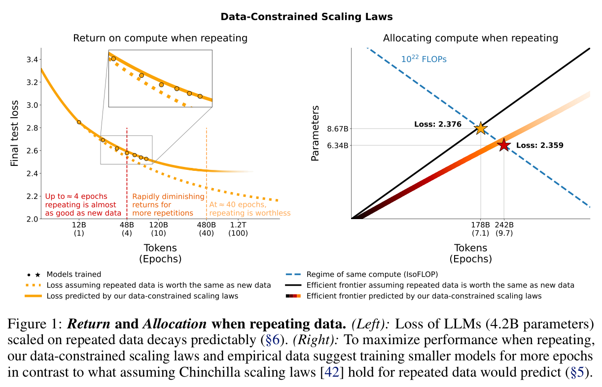
第 37 届神经信息处理系统会议（NeurIPS 2023）。
1 引言
最近关于计算最优语言模型的研究 [42] 表明，在给定计算预算下，许多此前训练的大语言模型（LLM，本文将其定义为参数量超过 10 亿的模型），若改为用更多数据训练一个更小的模型，本可以取得更好的性能。值得注意的是，700 亿参数的 Chinchilla 模型 [42] 在使用近似计算预算的情况下，通过在 4 倍数据上训练，性能超过了 2800 亿参数的 Gopher 模型 [89]。将这些计算分配规律（下文称为“Chinchilla scaling laws”）外推到一个 5300 亿参数的模型，例如训练不足的 MT-NLG 模型 [99]，将需要使用高达 11 万亿 token 训练，相当于超过 30 TB 的文本数据。对于大多数语言，可用数据量比这少几个数量级，这意味着这些语言的 LLM 已经受到数据限制。Villalobos 等人 [112] 估计，根据 Chinchilla scaling laws 和模型训练规模不断增大的趋势，即使高质量英文数据也会在 2024 年耗尽。这引出了一个问题 [112, 81]：当数据用完时，我们应该怎么办？
本文研究了在数据受限条件下扩展大语言模型，以及用重复数据训练 LLM 多轮是否会影响扩展规律。当然，多轮训练在一般机器学习中是标准做法；但此前大多数大语言模型只训练一轮 [51, 15]，还有一些研究明确反对重复使用数据 [40]。近期的 Galactica 模型 [108] 是个例外：它们训练了 4.25 轮，而且验证 loss 在整个训练期间持续下降，下游性能持续改善。然而，Galactica 的实验没有将这一设置与另一种不受数据约束、在不重复数据上只训练一轮的模型进行比较。缺少这种比较，就很难量化追加计算量与追加数据收集之间的取舍。
我们的主要目标是量化 LLM 多轮训练的影响，让实践者能够在扩展模型时决定如何分配计算量。为此，我们组织了一系列不同数据约束和计算约束下的实证训练运行。具体来说，我们训练了 400 多个模型，参数量从 1000 万到 90 亿，最多训练 1500 轮，并记录最终测试 loss。我们用这些结果拟合了一条新的数据受限 scaling law，将 Chinchilla scaling law [42] 推广到重复数据的情形，并能更准确地预测这种条件下的 loss。图 1 概括了我们的主要结果，分别针对重复数据的价值（收益）以及这种条件下的资源最优分配（分配）。我们发现，虽然只训练一轮的模型在单位计算量上的验证 loss 始终最好，但在最多训练 4 轮的模型之间，差别往往不显著，也不会造成下游任务性能差异。追加轮数仍然有益，但收益最终会递减至零。我们发现，在数据受限条件下，有必要将新增计算量同时分配给更多参数和更多轮数，而且轮数应该增长得稍快一些。这些发现表明，有一种简单办法能继续扩大总训练计算预算，使扩展持续时间超过此前预期的限制。
最后，考虑到数据约束带来的挑战，我们考察了重复训练之外的补充方法，以便在不添加新自然语言数据的情况下提高下游准确率。实验考虑了加入代码 token 和放宽数据过滤。对于代码，PaLM [19]、Gopher [89] 等英文 LLM 在自然语言数据之外还使用少量代码数据训练，但此前没有报告基准测试来证明这一决策的合理性。我们研究了以 10 种不同混合比例，用语言数据和 Python 数据的混合物训练 LLM，发现即使只评估自然语言任务，混入代码也能使有效 token 数增加 2 倍。对于过滤，我们在噪声数据集和干净数据集上重新考察了基于困惑度和去重的过滤策略，发现数据过滤主要对噪声数据集有效。
2 背景
决定训练资源时，预测大型模型的扩展行为至关重要。具体而言，有两个值得关注的问题：（分配）资源的最优平衡是什么？（收益）追加资源的预期价值是什么？对于 LLM 的扩展，资源就是计算量（以 FLOPs 衡量），可以将它分配给更大模型的训练，或分配给更多训练步骤（续下页）。
（续上页）1 用于衡量进展的指标，是模型在留出数据上的 loss，也就是以模型交叉熵衡量的、预测底层数据的能力 [2, 42]。我们的目标是在计算资源约束 \(C\) 下，通过向 \(N\) 和 \(D\) 最优分配资源来最小化 loss \(L\)：
目前，扩展 LLM 已有成熟的最佳实践。收益遵循幂律：loss 与训练所用的计算量呈幂律关系 [39, 46, 6, 35, 7, 41]。分配是平衡的：资源大致均匀地分配给参数和数据的扩展 [42]。这些 scaling laws 是通过训练 LLM 并谨慎外推其行为，以实证方式建立的。
Chinchilla [42] 使用三种方法进行扩展预测：
- （固定参数）使用固定模型大小，但在不同数据量上训练。
- （固定 FLOPs）固定计算量，同时改变参数量和训练 token 数。
- （参数化拟合）推导并拟合一个 loss 公式。
对于参数化拟合，loss \(L\) 是参数量 \(N\) 和训练 token 数 \(D\) 的函数：
其中，\(\{A,\alpha,B,\beta,E\}\) 是根据前两种方法的训练运行拟合得到的变量 [42]。利用这些学得的变量，他们提出按下式计算将计算量 \(C\) 分配给 \(N\) 和 \(D\) 的最优方式：
这些方法得出的结论是 \(\alpha\approx\beta\)，因此，为实现计算最优训练，\(N\) 和 \(D\) 应该按比例扩展。由于 loss 可能并不能完美地代理自然语言任务性能 [123, 97, 105]，他们还在多项下游任务上验证了这些结论。
3 方法：数据受限的 scaling laws
我们关注数据受限条件下的扩展行为。具体而言，在不重复数据量有限的情况下，计算资源的最佳分配和收益是什么？此前研究 [46, 42] 假定，支持扩展所需的数据是无限的。因此，我们希望引入公式 2 的修订版本，将数据约束考虑在内，并利用大量实验的数据拟合这条修订 scaling law 中的各项。
我们考察的主要方法是重复数据，即把 FLOPs 分配给同一数据上的多轮训练。给定不重复数据预算 \(D_C\)，我们将 Chinchilla 的总数据项 \(D\) 拆成两部分：使用的不重复 token 数 \(U_D\)，以及重复次数 \(R_D\)（即轮数减 1）。给定训练 token 总数 \(D\) 和数据预算 \(D_C\)，这些量可直接计算为 \(U_D=\min\{D_C,D\}\) 和 \(R_D=(D/U_D)-1\)。像此前扩展研究那样只训练一轮时，\(R_D=0\)。因此，我们要在额外的数据预算约束 \(D_C\) 下最小化公式 1：
为使数学表达方便，我们对称地将参数项 \(N\) 拆成两部分：最优拟合不重复 token 所需的基础参数量 \(U_N\)，以及“重复”这一初始分配的次数 \(R_N\)（续下页）。
1 本文采用 [46] 的计算成本近似：\(\operatorname{FLOPs}(N,D)\approx6ND\)，其中 \(N\) 表示模型参数量，\(D\) 表示处理的 token 数。
（续上页）计算 \(U_N\) 时，我们先重排公式 3，求出使用这些不重复 token（\(U_D\)）时的最优计算预算。将此值代入公式 3 的 \(N_{\mathrm{opt}}\) 公式，就得到 \(U_N=\min\{N_{\mathrm{opt}},N\}\)。因此，\(U_N\) 对应于 \(U_D\) 的计算最优参数量；如果 \(N<N_{\mathrm{opt}}\)，则更小。得到 \(U_N\) 后，我们将重复量计算为 \(R_N=(N/U_N)-1\)。
为实证考察数据有限条件下的扩展行为，我们在这些约束下训练 LLM。本文考虑三种不同的实验方案：
- （固定不重复数据）第 5 节固定数据约束 \(D_C\)，改变轮数和参数量来训练模型。这些实验针对分配，具体是 \(D\) 与 \(N\) 的取舍。
- （固定 FLOPs）第 6 节固定可用计算量，改变 \(D_C\)（因而也改变 \(U_D\) 和 \(U_N\)）。这些实验针对收益，即与更多不重复数据相比，重复数据的扩展效果如何。
- （参数化拟合）我们在全部训练运行上拟合第 3.1 节介绍的公式，并在第 5、6 节中评估其预测能力。
讨论实验结果前，我们先介绍参数化假设。
3.1 参数化拟合
为外推扩展曲线，必须将重复纳入 Chinchilla 公式（公式 2）。我们将 \(D\) 和 \(N\) 替换为有效数据 \(D'\) 和有效模型参数 \(N'\) 对应的项，从而推广公式 2。
直观上，\(D'\) 应小于或等于 \(D\)，其中 \(D\) 是处理的 token 总数，因为重复 token 提供给模型的有用信息比新 token 更少。我们采用指数衰减形式：每重复一次，所处理数据 token 的价值大约损失 \(1-1/R_D^*\) 的比例，其中 \(R_D^*\) 是学得的常数。经过一些推导和近似（见附录 A），可归结为：
注意，当 \(R_D=0\)（没有重复）时，\(D'=U_D=D\)。当 \(R_D\ll R_D^*\) 时，\(e^{-R_D/R_D^*}\approx1-R_D/R_D^*\)，所以：
因此，在这种情况下，重复数据的价值几乎与新数据一样。（这也符合“deep bootstrap”框架 [76] 的预测。）随着 \(R_D\) 增大，重复 token 的价值趋于零，有效数据 \(D'\) 会变得远小于 \(D\)。这个公式意味着，无论把数据重复多少次，得到的 loss 都不可能好于在 \(U_D+U_D R_D^*\) 个新 token 上训练一轮能够达到的结果。
正如处理重复 token 的收益会递减，从直觉和实证上看，模型大小远超可用数据量时，每个参数带来的收益也会递减。因此，我们对有效参数数量使用一个对称公式，其中 \(R_N^*\) 同样由学习得到：
学得的常数 \(R_D^*\)、\(R_N^*\) 大致对应重复数据和冗余参数的“半衰期”。例如，当 \(R_D=R_D^*\) 时，有效 token 数 \(D'\) 为 \(U_D+U_D R_D(1-e^{-1})\)，这意味着 \(U_D R_D\) 个重复 token 的平均价值是新 token 的 \(1-1/e\)。采用与 [42] 类似的方法，可以在实证测量上拟合 \(R_N^*\) 和 \(R_D^*\)，从而得到由数据驱动的估计。推导和拟合过程的更多细节见附录 A。
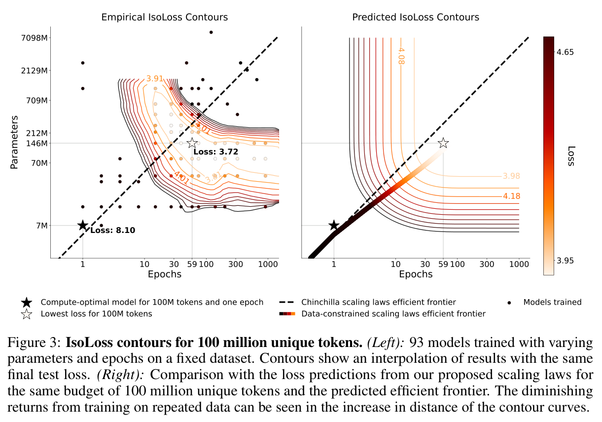
4 实验设置
全部实验都采用 GPT-2 架构和 tokenizer [88] 来训练 transformer 语言模型。模型最多有 87 亿参数，总训练 token 数最高为 9000 亿。遵循 [42]，我们为每个模型使用在整个训练过程中衰减 10 倍的余弦学习率计划（不同计划在 [46] 中导致了不同估计）。与 [46] 不同，我们不使用提前停止，以便同时考察重复数据时的过拟合程度。其他超参数基于此前研究 [89, 42]，详见附录 S。模型在 C4 [90] 的子集上训练。我们仔细定义数据约束，确保如图 2 所示的最大重叠。与 [40] 不同，我们始终重复全部可用数据，而非其中的子集。每轮结束后都会打乱数据。由于重复数据可能导致极端过拟合（见附录 H），除非另有说明，我们都报告留出测试集上的 loss（见附录 K）。这与 [42] 使用训练 loss 的做法不同，但不应改变我们的发现，因为留出数据来自同一底层数据集。
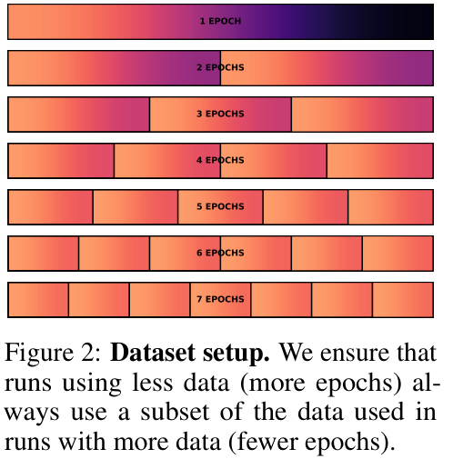
5 结果：数据受限扩展的资源分配
我们的第一个实验场景考察所有模型具有相同数据约束时的扩展。在这些实验中，不重复训练数据预算 \(D_C\) 固定为 1 亿、4 亿或 15 亿 token。对于每种数据预算，我们训练一组计算量逐渐增加的语言模型，将计算量分配给更多参数，或在这些不重复训练数据上训练更多轮。
图 3（左）展示了使用 1 亿不重复 token 扩展的主要结果2（4 亿和 15 亿 token 的情况见附录 C）。对于 1 亿 token，根据 [42] 的 scaling laws，对应的单轮计算最优模型（续下页）。
2 这个规模虽小，但例如，过滤 OSCAR 数据集 [84] 后，巴斯克语、旁遮普语或斯洛文尼亚语可用数据的实际约束就在这个数量级。
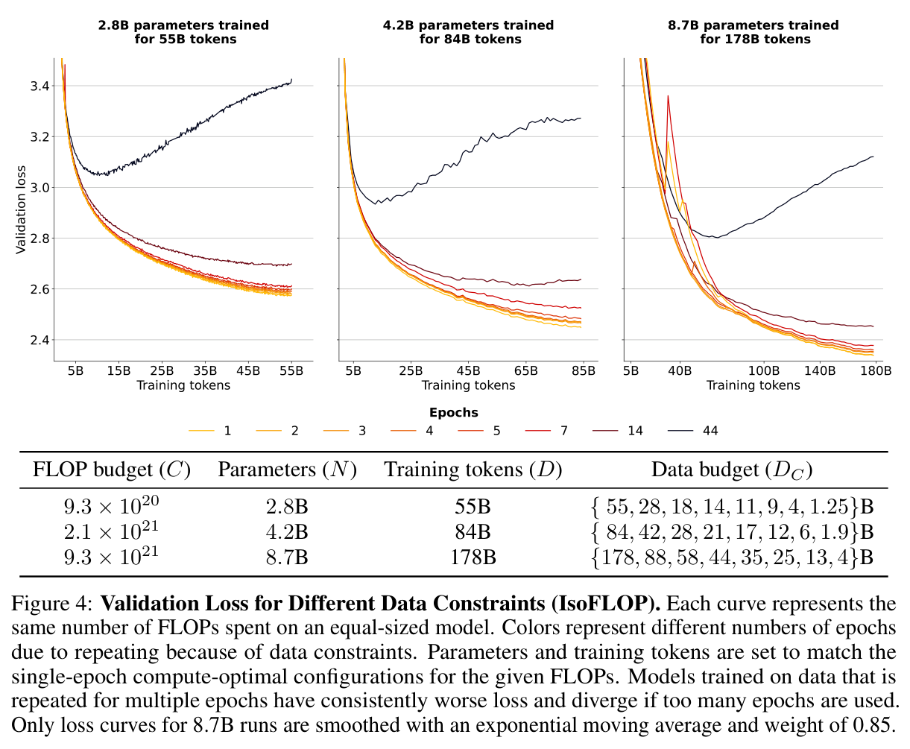
（续上页）的 \(U_N\) 大约为 700 万参数（我们使用的扩展系数见附录 B）。结果显示，通过训练多轮（\(R_D>0\)），并将模型规模增大到超过 1 亿 token 对应的计算最优规模（\(R_N>0\)），loss 可以降低 50% 以上。我们发现，最低 loss 出现在参数量和轮数大约增加 20–60 倍时，对应消耗约 7000 倍 FLOPs。这些结果表明，单轮模型严重未能充分利用训练数据；通过重复数据并增加参数，可以以非最优计算利用率为代价，提取更多信号。
图 3（右）展示了在 182 次训练运行上拟合数据受限 scaling laws 得到的预测等 loss 线。在单轮情形（\(R_D=0\)）且参数接近计算最优值（\(R_N=0\)）时，我们的扩展公式（第 3.1 节）退化为 Chinchilla 公式。在这种情况下，两条公式预测的计算量在参数和数据之间的最优分配一致，因此高效前沿重合。当重复数据、训练超过一轮时，我们的拟合预测，冗余参数的价值衰减比重复数据更快（\(R_N^*<R_D^*\)）。因此，数据受限的高效前沿建议，将大部分追加计算量分配给更多轮数，而非更多参数。这与 Chinchilla scaling laws [42] 建议等比例扩展两者的结论不同。但要注意，他们没有重复全部训练数据，而且其参数化拟合明确依赖于模型只训练一轮这一假设。因此，不能保证他们的扩展预测适用于重复数据。
对于全部三种数据预算，我们的结果均表明，让轮数增长快于参数量，可以优化分配。我们通过训练一个较大规模模型来验证这一点：在 \(9.3\times10^{21}\) FLOPs 和 250 亿不重复 token 下，按我们的高效前沿给出的建议训练数据受限的计算最优模型。虽然参数少了 27%，这个模型的 loss 和下游性能都优于 Chinchilla scaling laws 建议的模型（图 1 右和表 8）。同样，根据数据受限 scaling laws，用重复数据训练的 1200 亿参数 Galactica 模型原本应该小得多（附录 G）。采用更小模型的另一个好处是推理更便宜，不过增加参数可能更容易将训练并行分布到多块 GPU 上。
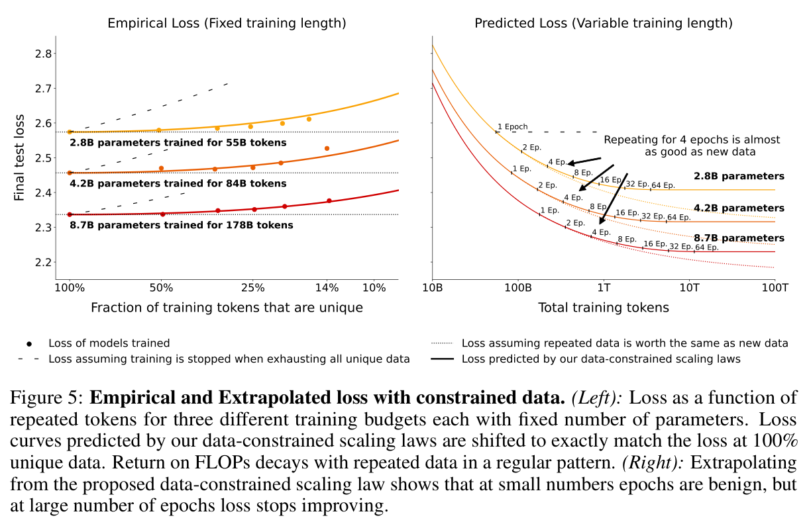
增加参数和轮数会使 loss 先下降、最终又上升，说明过多计算量可能损害性能。[46] 的结果也显示，即使采用提前停止，使用过多参数仍可能使 loss 上升。不过，我们预计，恰当的正则化（极端情况下，例如直接删除全部冗余参数）可以防止这种行为。因此，第 3 节提出的公式以及图 3 中它预测的等 loss 线，没有建模过多轮数或参数可能损害性能的情况。
6 结果：数据受限扩展的资源收益
接下来考虑扩展的收益问题。为量化这一价值，我们在三种 FLOP 预算下，分别使用八种数据预算开展实验，以比较 FLOPs 的收益。
图 4 展示了训练 token 总数相同的各模型的配置和验证曲线。与直觉及此前关于去重的研究 [55] 一致，重复数据的价值更低，因此，在较少不重复数据上训练（相应训练更多轮）的模型，其 loss 始终更高。不过，只重复几轮时，loss 差异可以忽略不计。例如，训练四轮的 \(N=87\) 亿参数模型（\(D_C=440\) 亿不重复 token），训练结束时的验证 loss 仅比单轮模型（\(D_C=1780\) 亿不重复 token）高 0.5%。
在图 5（左）中，我们将每个模型的最终测试 loss 与参数化拟合的预测进行了比较。实证结果（点）和参数化拟合（线）彼此接近，表明数据受限 scaling laws 能准确衡量重复数据价值的衰减。不过我们注意到，对于训练中途 loss 上升的失败模型，例如训练了 44 轮的模型（图中未绘出），它会明显低估最终测试 loss。
在图 5（右）中，我们保持数据约束 \(D_C\) 分别为 550 亿、840 亿和 1780 亿 token，并通过进一步扩大计算量，对这三种预算进行外推。第 3 节引入的参数 \(R_D^*\) 大致表示轮数的“半衰期”，具体来说，是重复 token 已失去其价值的 \(1/e\) 时的点。通过附录 A 的拟合，我们得到 \(R_D^*\approx15\)，对应 15 次重复（或 16 轮）。在图形上，这体现为 16 轮标记附近收益明显递减，并在之后不久趋于平坦。
总体而言，重复数据的收益相当不错。重复数据在大约 16 轮（\(R_D^*\)）以内仍能带来有意义的提升，超过之后收益会极快递减。
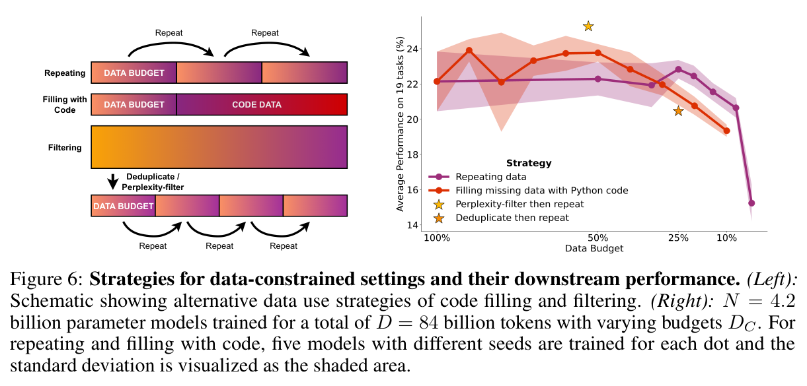
7 结果：获取额外数据的补充策略
重复数据虽然有效，但收益会递减。因此，我们考虑扩展 \(D\) 的策略，目标是提高下游性能，而非直接最小化 loss。
图 6（左）说明了这些策略：（a）代码扩充：我们使用 The Stack [49] 中的 Python 代码来弥补缺少的自然语言数据。由代码样本和自然语言样本组成的合并数据集被随机打乱。（b）调整过滤：我们研究去重和困惑度过滤对性能的影响，这两种常见过滤步骤可能严重限制可用数据。取消这些过滤步骤可以释放额外训练数据。
在这些实验中，我们将最大数据预算 \(D_C\) 设为 840 亿 token。对于重复训练和代码填充，只能使用 \(D_C\) 的一个子集，其余需要通过重复或添加代码来补足。对于两种过滤方法，我们都从大约两倍预算（1780 亿 token）开始，因为收集噪声数据再过滤，比直接收集干净训练数据更容易。对于困惑度过滤，我们根据一个在 Wikipedia 上训练的语言模型，选出困惑度最低的前 25% 样本。得到的 440 亿 token 会重复接近两轮，以达到完整数据预算。对于去重过滤，移除所有具有 100 字符重叠的样本，剩下 210 亿 token，在训练中重复四轮。过滤过程的更多细节见附录 N。
比较不同数据策略时，loss 不再是合适的评估指标，因为模型在不同数据分布上训练。因此，我们在 19 项自然语言任务上，用零到五个上下文内少样本示例 [15] 评估模型，每个模型产生 114 个得分。由于评估任务包含不同指标和随机基线，我们在取平均前将所有得分重新缩放到同一范围，以更好地反映性能范围。评估数据集的细节见附录 K。
图 6（右）比较了所有策略的下游性能。对于重复数据，最多大约 4 轮（25% 预算）时下游性能差异不显著，之后才开始下降，这与第 6 节的测试 loss 结果一致。用代码填充最多 50% 数据（420 亿 token），同样没有出现退化。超过这一比例，自然语言任务性能迅速下降。不过，添加更多代码数据可能有益于基准测试没有考虑的非自然语言任务。所测试的两项任务——生成任务 WebNLG [17, 34] 和推理任务 bAbI [122, 57]——在刚加入代码时性能就有跃升，这可能是因为代码使模型学会了有益于这些任务的长距离状态跟踪能力。
在过滤方法中，我们发现困惑度过滤有效，而去重没有帮助。此前研究发现，去重可以改善困惑度 [55]，但没有评估下游任务。去重可能有我们的基准没有捕捉到的价值，例如减少记忆 [45, 40, 16, 10]。在附录 O 中，我们还在另一个噪声更大的数据集上研究了过滤，发现过滤在该数据集上更加有效。总体而言，在数据受限条件下，我们建议将过滤保留给噪声数据集，并同时使用代码扩充与重复训练来增加数据 token（续下页）。
（续上页）例如，先通过添加代码使可用数据翻倍，再将新数据集重复训练四轮，就能使训练 token 数增加 8 倍，预期效果与一开始就拥有 8 倍不重复数据一样好。
8 相关工作
大语言模型。 研究表明，沿参数量和训练数据两个方向扩大 transformer 语言模型 [111]，会带来持续的性能提升 [19]。从 14 亿参数的 GPT-2 模型 [88] 开始，人们已经训练出多种扩大规模的语言模型，通常称为大语言模型（LLM）。按每次前向传播是否使用所有参数，它们可分为稠密模型 [15, 47, 58, 89, 20, 13, 132, 109, 103, 108, 130, 95, 56, 65] 和稀疏模型 [30, 131, 28, 135]。这些模型通常通过预测序列中的下一个 token 来预训练；将 NLP 任务改写成上下文续写任务（这一主题的较早提议见 [67]）后，模型在预训练结束后就能直接应用于多种语言任务 [15, 118, 50, 71, 102]。我们关注最常见的场景，即在大型语料库上训练稠密 transformer 模型进行下一 token 预测，并在预训练结束后，直接用留出 loss 或零样本至少样本提示进行评估。
Scaling laws。 此前研究估计过 LLM 训练的计算量最优分配。Kaplan 等人 [46] 建议，计算量增加 10 倍时，应将模型大小增加 5.5 倍、训练 token 增加 1.8 倍。这条最早的 scaling law 催生了使用相对较少数据训练的超大型模型，例如使用 2700 亿 token 训练的 5300 亿参数 MT-NLG 模型 [99]。然而，较新的研究 [42] 表明，模型大小和训练数据应该等比例扩展。这些发现要求重新关注预训练数据的扩展，而不是依靠复杂并行策略来扩大模型 [98, 91, 9, 78]。当预训练数据部分受限时，经常会采用上采样，例如 Wikipedia 等高质量领域的数据，或训练多语言 LLM 时的稀少语言文本 [60, 82]。Hernandez 等人 [40] 研究了数据子集的上采样，发现即使只把训练数据的 0.1% 重复 100 次，也会显著降低性能。相比之下，我们关注的是把整个预训练语料库重复训练多轮，而非对其中部分内容上采样。
替代数据策略。 大型预训练数据集通常会经过过滤，以移除不需要的样本或减少噪声 [101]。基于困惑度的过滤使用一个训练好的模型，滤除高困惑度样本，已被发现有助于降低网络爬取数据集中的噪声 [121]。多语言 LLM 的预训练数据采用数据混合，将不同语言的文本数据组合起来 [23, 126, 100, 74]。但无论是代码模型还是自然语言模型，都有报告称，混合不同（编程）语言的表现不如单语言模型 [80, 113]。一些工作研究过在预测任务中混合代码和自然语言数据，例如概括代码片段 [44] 或预测函数名 [4]。若干 LLM 预训练数据集包含少量代码数据 [31, 89, 95]。不过，这些既有工作一般没有提供消融实验，分析加入代码的缺点或其对自然语言任务性能的好处。我们详细测试了 LLM 预训练中 10 种不同 Python 与自然语言混合比例的表现。
9 结论
本文研究了数据受限的扩展，关注不重复数据有限时如何最优使用计算资源。我们提出了 Chinchilla scaling laws 的扩展，将重复数据价值的衰减纳入考虑，并通过大量受控实验拟合这一函数。我们发现，尽管早期工作给出相反建议，通过重复数据训练大语言模型多轮仍然有益；scaling laws 在多轮条件下仍然成立，只是收益会递减。我们还考虑了继续扩大模型的补充方法，发现代码可以再支持 2 倍扩展。我们认为，这些发现将使语言模型能够利用现有数据进一步扩展，释放新能力。不过，我们的研究也表明，扩展前景存在限制。除了收集更多数据，研究者还应探索更有效地利用现有数据。
致谢与资金披露
本研究由欧盟依据第 101070350 号资助协议共同资助。作者感谢芬兰 CSC – IT Center for Science 在 LUMI 超级计算机上慷慨提供的计算资源。3 我们感谢 LUMI 和 AMD 团队的大力支持，尤其是 Samuel Antao。Hugging Face 提供了存储和额外计算实例。本研究还得到 Simons Investigator Fellowship、NSF 资助 DMS-2134157、DARPA 资助 W911NF2010021 和 DOE 资助 DE-SC0022199 的支持。感谢 Harm de Vries、Woojeong Kim、Mengzhou Xia 以及 EleutherAI 社区提供的出色反馈。感谢 Loubna Ben Allal 在 Python 数据方面的帮助，感谢 Big Code 成员围绕 scaling laws 展开的深刻讨论。感谢 Thomas Wang、Helen Ngo 和 TurkuNLP 成员对早期实验的支持。感谢 Mengning Wu 指出我们 \(R^2\) 计算中的一个错误。
参考文献
[1] Armen Aghajanyan, Lili Yu, Alexis Conneau, Wei-Ning Hsu, Karen Hambardzumyan, Susan Zhang, Stephen Roller, Naman Goyal, Omer Levy, and Luke Zettlemoyer. 2023. 生成式混合模态语言模型的 scaling laws. arXiv 预印本 arXiv:2301.03728.
[2] Ibrahim M Alabdulmohsin, Behnam Neyshabur, and Xiaohua Zhai. 2022. 重新审视语言与视觉中的神经 scaling laws. Advances in Neural Information Processing Systems, 35:22300–22312.
[3] Loubna Ben Allal, Raymond Li, Denis Kocetkov, Chenghao Mou, Christopher Akiki, Carlos Munoz Ferrandis, Niklas Muennighoff, Mayank Mishra, Alex Gu, Manan Dey, et al. 2023. SantaCoder：不要好高骛远！arXiv 预印本 arXiv:2301.03988.
[4] Miltiadis Allamanis, Earl T Barr, Christian Bird, and Charles Sutton. 2015. 推荐准确的方法名与类名. 收录于 Proceedings of the 2015 10th joint meeting on foundations of software engineering, 页 38–49.
[5] Stephen H. Bach, Victor Sanh, Zheng-Xin Yong, Albert Webson, Colin Raffel, Nihal V. Nayak, Abheesht Sharma, Taewoon Kim, M Saiful Bari, Thibault Fevry, Zaid Alyafeai, Manan Dey, Andrea Santilli, Zhiqing Sun, Srulik Ben-David, Canwen Xu, Gunjan Chhablani, Han Wang, Jason Alan Fries, Maged S. Al-shaibani, Shanya Sharma, Urmish Thakker, Khalid Almubarak, Xiangru Tang, Xiangru Tang, Mike Tian-Jian Jiang, and Alexander M. Rush. 2022. PromptSource：自然语言提示的集成开发环境与资源库.
[6] Yasaman Bahri, Ethan Dyer, Jared Kaplan, Jaehoon Lee, and Utkarsh Sharma. 2021. 解释神经 scaling laws. arXiv 预印本 arXiv:2102.06701.
[7] Yamini Bansal, Behrooz Ghorbani, Ankush Garg, Biao Zhang, Colin Cherry, Behnam Neyshabur, and Orhan Firat. 2022. 神经机器翻译中的数据 scaling laws：噪声与架构的影响. 收录于 International Conference on Machine Learning, 页 1466–1482. PMLR.
[8] Emily M. Bender, Timnit Gebru, Angelina McMillan-Major, and Shmargaret Shmitchell. 2021. 论随机鹦鹉的危险：语言模型会不会过于庞大？收录于 Proceedings of the 2021 ACM Conference on Fairness, Accountability, and Transparency, 页 610–623.
[9] Zhengda Bian, Hongxin Liu, Boxiang Wang, Haichen Huang, Yongbin Li, Chuanrui Wang, Fan Cui, and Yang You. 2021. Colossal-AI：面向大规模并行训练的统一深度学习系统. arXiv 预印本 arXiv:2110.14883.
[10] Stella Biderman, USVSN Sai Prashanth, Lintang Sutawika, Hailey Schoelkopf, Quentin Anthony, Shivanshu Purohit, and Edward Raf. 2023. 大语言模型中涌现且可预测的记忆. arXiv 预印本 arXiv:2304.11158.
[11] Stella Biderman, Hailey Schoelkopf, Quentin Anthony, Herbie Bradley, Kyle O’Brien, Eric Hallahan, Mohammad Aflah Khan, Shivanshu Purohit, USVSN Sai Prashanth, Edward Raff, et al. 2023. Pythia：用于跨训练过程与扩展规模分析大语言模型的套件. arXiv 预印本 arXiv:2304.01373.
[12] Yonatan Bisk, Rowan Zellers, Ronan Le Bras, Jianfeng Gao, and Yejin Choi. 2020. PIQA：自然语言中的物理常识推理. In Thirty-Fourth AAAI Conference on Artificial Intelligence.
[13] Sid Black, Stella Biderman, Eric Hallahan, Quentin Anthony, Leo Gao, Laurence Golding, Horace He, Connor Leahy, Kyle McDonell, Jason Phang, et al. 2022. GPT-NeoX-20B：开源自回归语言模型. arXiv 预印本 arXiv:2204.06745.
[14] Sid Black, Leo Gao, Phil Wang, Connor Leahy, and Stella Biderman. 2021. GPT-Neo：使用 mesh-tensorflow 进行大规模自回归语言建模. 如果使用此软件，请用这些元数据引用它, 58.
[15] Tom Brown, Benjamin Mann, Nick Ryder, Melanie Subbiah, Jared D Kaplan, Prafulla Dhariwal, Arvind Neelakantan, Pranav Shyam, Girish Sastry, Amanda Askell, et al. 2020. 语言模型是少样本学习者. Advances in neural information processing systems, 33:1877– 1901.
[16] Nicholas Carlini, Daphne Ippolito, Matthew Jagielski, Katherine Lee, Florian Tramer, and Chiyuan Zhang. 2022. 量化神经语言模型的记忆. arXiv 预印本 arXiv:2202.07646.
[17] Thiago Castro Ferreira, Claire Gardent, Nikolai Ilinykh, Chris van der Lee, Simon Mille, Diego Moussallem, and Anastasia Shimorina. 2020. 2020 年双语、双向 WebNLG+ 共享任务概述与评估结果（WebNLG+ 2020）. In Proceedings of the 3rd WebNLG Workshop on Natural Language Generation from the Semantic Web (WebNLG+ 2020), 页 55–76, Dublin, Ireland (Virtual). Association for Computational Linguistics.
[18] Mark Chen, Alec Radford, Rewon Child, Jeffrey Wu, Heewoo Jun, David Luan, and Ilya Sutskever. 2020. 从像素进行生成式预训练. In International conference on machine learning, 页 1691–1703. PMLR.
[19] Aakanksha Chowdhery, Sharan Narang, Jacob Devlin, Maarten Bosma, Gaurav Mishra, Adam Roberts, Paul Barham, Hyung Won Chung, Charles Sutton, Sebastian Gehrmann, et al. 2022. PaLM：使用 Pathways 扩展语言建模. arXiv 预印本 arXiv:2204.02311.
[20] Hyung Won Chung, Le Hou, Shayne Longpre, Barret Zoph, Yi Tay, William Fedus, Eric Li, Xuezhi Wang, Mostafa Dehghani, Siddhartha Brahma, Albert Webson, Shixiang Shane Gu, Zhuyun Dai, Mirac Suzgun, Xinyun Chen, Aakanksha Chowdhery, Sharan Narang, Gaurav Mishra, Adams Yu, Vincent Zhao, Yanping Huang, Andrew Dai, Hongkun Yu, Slav Petrov, Ed H. Chi, Jeff Dean, Jacob Devlin, Adam Roberts, Denny Zhou, Quoc V. Le, and Jason Wei. 2022. 扩展经过指令微调的语言模型. arXiv 预印本 arXiv:2210.11416.
[21] Christopher Clark, Kenton Lee, Ming-Wei Chang, Tom Kwiatkowski, Michael Collins, and Kristina Toutanova. 2019. BoolQ：探索自然是非问句出人意料的难度. In NAACL.
[22] Peter Clark, Isaac Cowhey, Oren Etzioni, Tushar Khot, Ashish Sabharwal, Carissa Schoenick, and Oyvind Tafjord. 2018. 以为你已经解决了问答？试试 ARC——AI2 推理挑战. arXiv:1803.05457v1.
[23] Alexis Conneau, Kartikay Khandelwal, Naman Goyal, Vishrav Chaudhary, Guillaume Wenzek, Francisco Guzmán, Edouard Grave, Myle Ott, Luke Zettlemoyer, and Veselin Stoyanov. 2019. 大规模无监督跨语言表征学习. arXiv 预印本 arXiv:1911.02116.
[24] Ido Dagan, Oren Glickman, and Bernardo Magnini. 2006. PASCAL 文本蕴含识别挑战. In Machine Learning Challenges. Evaluating Predictive Uncertainty, Visual Object Classification, and Recognising Tectual Entailment: First PASCAL Machine
（参考文献 [24] 续上页）Learning Challenges Workshop, MLCW 2005, Southampton, UK, April 11-13, 2005, Revised Selected Papers, 页 177–190. Springer.
[25] Marie-Catherine De Marneffe, Mandy Simons, and Judith Tonhauser. 2019. CommitmentBank：研究自然发生话语中的投射. In proceedings of Sinn und Bedeutung, 卷 23, 页 107–124.
[26] Mostafa Dehghani, Josip Djolonga, Basil Mustafa, Piotr Padlewski, Jonathan Heek, Justin Gilmer, Andreas Steiner, Mathilde Caron, Robert Geirhos, Ibrahim Alabdulmohsin, et al. 2023. 将视觉 transformer 扩展至 220 亿参数. arXiv 预印本 arXiv:2302.05442.
[27] Mostafa Dehghani, Stephan Gouws, Oriol Vinyals, Jakob Uszkoreit, and Łukasz Kaiser. 2018. 通用 transformer. arXiv 预印本 arXiv:1807.03819.
[28] Nan Du, Yanping Huang, Andrew M Dai, Simon Tong, Dmitry Lepikhin, Yuanzhong Xu, Maxim Krikun, Yanqi Zhou, Adams Wei Yu, Orhan Firat, et al. 2022. GLaM：通过 MoE 高效扩展语言模型. In International Conference on Machine Learning, 页 5547–5569. PMLR.
[29] Ondřej Dušek, Jekaterina Novikova, and Verena Rieser. 2020. 评估端到端自然语言生成的最先进水平：E2E NLG 挑战. Computer Speech & Language, 59:123–156.
[30] William Fedus, Barret Zoph, and Noam Shazeer. 2021. Switch transformer：通过简单高效的稀疏性扩展至万亿参数模型. J. Mach. Learn. Res, 23:1–40.
[31] Leo Gao, Stella Biderman, Sid Black, Laurence Golding, Travis Hoppe, Charles Foster, Jason Phang, Horace He, Anish Thite, Noa Nabeshima, Shawn Presser, and Connor Leahy. 2020. The Pile：用于语言建模的 800 GB 多样化文本数据集. arXiv 预印本 arXiv:2101.00027.
[32] Leo Gao, Jonathan Tow, Stella Biderman, Sid Black, Anthony DiPofi, Charles Foster, Laurence Golding, Jeffrey Hsu, Kyle McDonell, Niklas Muennighoff, Jason Phang, Laria Reynolds, Eric Tang, Anish Thite, Ben Wang, Kevin Wang, and Andy Zou. 2021. 少样本语言模型评估框架.
[33] Samuel Gehman, Suchin Gururangan, Maarten Sap, Yejin Choi, and Noah A Smith. 2020. RealToxicityPrompts：评估语言模型中的神经毒性退化. arXiv 预印本 arXiv:2009.11462.
[34] Sebastian Gehrmann, Tosin Adewumi, Karmanya Aggarwal, Pawan Sasanka Ammanamanchi, Aremu Anuoluwapo, Antoine Bosselut, Khyathi Raghavi Chandu, Miruna Clinciu, Dipanjan Das, Kaustubh D Dhole, et al. 2021. GEM 基准：自然语言生成及其评估与指标. arXiv 预印本 arXiv:2102.01672.
[35] Behrooz Ghorbani, Orhan Firat, Markus Freitag, Ankur Bapna, Maxim Krikun, Xavier Garcia, Ciprian Chelba, and Colin Cherry. 2021. 神经机器翻译的 scaling laws. arXiv 预印本 arXiv:2109.07740.
[36] Himanshu Gupta, Saurabh Arjun Sawant, Swaroop Mishra, Mutsumi Nakamura, Arindam Mitra, Santosh Mashetty, and Chitta Baral. 2023. 经过指令调优的模型学习得很快. arXiv 预印本 arXiv:2306.05539.
[37] Kenneth Heafield. 2011. KenLM：更快、更小的语言模型查询. In Proceedings of the Sixth Workshop on Statistical Machine Translation, 页 187–197, Edinburgh, Scotland. Association for Computational Linguistics.
[38] Peter Henderson, Mark Krass, Lucia Zheng, Neel Guha, Christopher D Manning, Dan Jurafsky, and Daniel Ho. 2022. Pile of Law：从法律和 256 GB 开源法律数据集学习负责任的数据过滤. Advances in Neural Information Processing Systems, 35:29217– 29234.
[39] Tom Henighan, Jared Kaplan, Mor Katz, Mark Chen, Christopher Hesse, Jacob Jackson, Heewoo Jun, Tom B Brown, Prafulla Dhariwal, Scott Gray, et al. 2020. 自回归生成式建模的 scaling laws. arXiv 预印本 arXiv:2010.14701.
[40] Danny Hernandez, Tom Brown, Tom Conerly, Nova DasSarma, Dawn Drain, Sheer El-Showk, Nelson Elhage, Zac Hatfield-Dodds, Tom Henighan, Tristan Hume, et al. 2022. 从重复数据学习的 scaling laws 与可解释性. arXiv 预印本 arXiv:2205.10487.
[41] Danny Hernandez, Jared Kaplan, Tom Henighan, and Sam McCandlish. 2021. 迁移的 scaling laws. arXiv 预印本 arXiv:2102.01293.
[42] Jordan Hoffmann, Sebastian Borgeaud, Arthur Mensch, Elena Buchatskaya, Trevor Cai, Eliza Rutherford, Diego de Las Casas, Lisa Anne Hendricks, Johannes Welbl, Aidan Clark, et al. 2022. 训练计算最优的大语言模型. arXiv 预印本 arXiv:2203.15556.
[43] Cheng-Zhi Anna Huang, Ashish Vaswani, Jakob Uszkoreit, Noam Shazeer, Ian Simon, Curtis Hawthorne, Andrew M Dai, Matthew D Hoffman, Monica Dinculescu, and Douglas Eck. 2018. Music transformer. arXiv 预印本 arXiv:1809.04281.
[44] Srinivasan Iyer, Ioannis Konstas, Alvin Cheung, and Luke Zettlemoyer. 2016. 使用神经 attention 模型概括源代码. In Proceedings of the 54th Annual Meeting of the Association for Computational Linguistics (Volume 1: Long Papers), 页 2073–2083.
[45] Nikhil Kandpal, Eric Wallace, and Colin Raffel. 2022. 训练数据去重可以缓解语言模型的隐私风险.
[46] Jared Kaplan, Sam McCandlish, Tom Henighan, Tom B Brown, Benjamin Chess, Rewon Child, Scott Gray, Alec Radford, Jeffrey Wu, and Dario Amodei. 2020. 神经语言模型的 scaling laws. arXiv 预印本 arXiv:2001.08361.
[47] Mikhail Khrushchev, Ruslan Vasilev, Alexey Petrov, and Nikolay Zinov. 2022. YaLM 100B.
[48] Diederik P Kingma and Jimmy Ba. 2014. Adam：一种随机优化方法. arXiv 预印本 arXiv:1412.6980.
[49] Denis Kocetkov, Raymond Li, Loubna Ben Allal, Jia Li, Chenghao Mou, Carlos Muñoz Ferrandis, Yacine Jernite, Margaret Mitchell, Sean Hughes, Thomas Wolf, et al. 2022. The Stack：3 TB 宽松许可源代码. arXiv 预印本 arXiv:2211.15533.
[50] Takeshi Kojima, Shixiang Shane Gu, Machel Reid, Yutaka Matsuo, and Yusuke Iwasawa. 2022. 大语言模型是零样本推理者. arXiv 预印本 arXiv:2205.11916.
[51] Aran Komatsuzaki. 2019. 只需一轮训练. arXiv 预印本 arXiv:1906.06669.
[52] Taku Kudo and John Richardson. 2018. SentencePiece：用于神经文本处理的简单、语言无关的子词 tokenizer 与逆 tokenizer. In Proceedings of the 2018 Conference on Empirical Methods in Natural Language Processing: System Demonstrations, 页 66–71, Brussels, Belgium. Association for Computational Linguistics.
[53] Faisal Ladhak, Esin Durmus, Claire Cardie, and Kathleen McKeown. 2020. WikiLingua：用于跨语言抽象式摘要的新基准数据集. arXiv 预印本 arXiv:2010.03093.
[54] Hugo Laurençon, Lucile Saulnier, Thomas Wang, Christopher Akiki, Albert Villanova del Moral, Teven Le Scao, Leandro Von Werra, Chenghao Mou, Eduardo González Ponferrada, Huu Nguyen, et al. 2022. BigScience ROOTS 语料库：1.6 TB 复合多语言数据集. In Thirty-sixth Conference on Neural Information Processing Systems Datasets and Benchmarks Track.
[55] Katherine Lee, Daphne Ippolito, Andrew Nystrom, Chiyuan Zhang, Douglas Eck, Chris Callison-Burch, and Nicholas Carlini. 2021. 训练数据去重让语言模型更好. arXiv 预印本 arXiv:2107.06499.
[56] Raymond Li, Loubna Ben Allal, Yangtian Zi, Niklas Muennighoff, Denis Kocetkov, Chenghao Mou, Marc Marone, Christopher Akiki, Jia Li, Jenny Chim, Qian Liu, Evgenii Zheltonozhskii, Terry Yue Zhuo, Thomas Wang, Olivier Dehaene, Mishig Davaadorj, Joel Lamy-Poirier, João Monteiro, Oleh Shliazhko, Nicolas Gontier, Nicholas Meade, Armel Zebaze, Ming-Ho Yee, Logesh Kumar Umapathi, Jian Zhu, Benjamin Lipkin, Muhtasham Oblokulov, Zhiruo Wang, Rudra Murthy, Jason Stillerman, Siva Sankalp Patel, Dmitry Abulkhanov, Marco Zocca, Manan Dey, Zhihan Zhang, Nour Fahmy, Urvashi Bhattacharyya, Wenhao Yu, Swayam Singh, Sasha Luccioni, Paulo Villegas, Maxim Kunakov, Fedor Zhdanov, Manuel Romero, Tony Lee, Nadav Timor, Jennifer Ding, Claire Schlesinger, Hailey Schoelkopf, Jan Ebert, Tri Dao, Mayank Mishra, Alex Gu, Jennifer Robinson, Carolyn Jane Anderson, Brendan Dolan-Gavitt, Danish Contractor, Siva Reddy, Daniel Fried, Dzmitry Bahdanau, Yacine Jernite, Carlos Muñoz Ferrandis, Sean Hughes, Thomas Wolf, Arjun Guha, Leandro von Werra, and Harm de Vries. 2023. StarCoder：愿源码与你同在！ arXiv 预印本 arXiv:2305.06161.
[57] Percy Liang, Rishi Bommasani, Tony Lee, Dimitris Tsipras, Dilara Soylu, Michihiro Yasunaga, Yian Zhang, Deepak Narayanan, Yuhuai Wu, Ananya Kumar, et al. 2022. 语言模型的整体评估. arXiv 预印本 arXiv:2211.09110.
[58] Opher Lieber, Or Sharir, Barak Lenz, and Yoav Shoham. 2021. Jurassic-1：技术细节与评估. 白皮书. AI21 Labs, 1.
[59] Chin-Yew Lin. 2004. ROUGE：用于摘要自动评估的工具包. In Text summarization branches out, 页 74–81.
[60] Xi Victoria Lin, Todor Mihaylov, Mikel Artetxe, Tianlu Wang, Shuohui Chen, Daniel Simig, Myle Ott, Naman Goyal, Shruti Bhosale, Jingfei Du, et al. 2021. 使用多语言模型进行少样本学习. arXiv 预印本 arXiv:2112.10668.
[61] Yu-Hsiang Lin, Chian-Yu Chen, Jean Lee, Zirui Li, Yuyan Zhang, Mengzhou Xia, Shruti Rijhwani, Junxian He, Zhisong Zhang, Xuezhe Ma, et al. 2019. 为跨语言学习选择迁移语言. arXiv 预印本 arXiv:1905.12688.
[62] Shayne Longpre, Le Hou, Tu Vu, Albert Webson, Hyung Won Chung, Yi Tay, Denny Zhou, Quoc V Le, Barret Zoph, Jason Wei, et al. 2023. Flan Collection：为有效的指令调优设计数据与方法. arXiv 预印本 arXiv:2301.13688.
[63] Shayne Longpre, Robert Mahari, Anthony Chen, Naana Obeng-Marnu, Damien Sileo, William Brannon, Niklas Muennighoff, Nathan Khazam, Jad Kabbara, Kartik Perisetla, Xinyi Wu, Enrico Shippole, Kurt Bollacker, Tongshuang Wu, Luis Villa, Sandy Pentland, Deb Roy, and Sara Hooker. 2023. Data Provenance Initiative：对 AI 数据集许可与署名的大规模审计.
[64] Shayne Longpre, Gregory Yauney, Emily Reif, Katherine Lee, Adam Roberts, Barret Zoph, Denny Zhou, Jason Wei, Kevin Robinson, David Mimno, and Daphne Ippolito. 2023. 预训练者的训练数据指南：衡量数据年代、领域覆盖、质量与毒性的影响.
[65] Risto Luukkonen, Ville Komulainen, Jouni Luoma, Anni Eskelinen, Jenna Kanerva, Hanna-Mari Kupari, Filip Ginter, Veronika Laippala, Niklas Muennighoff, Aleksandra Piktus, Thomas Wang, Nouamane Tazi, Teven Le Scao, Thomas Wolf, Osma Suominen, Samuli Sairanen, Mikko Merioksa, Jyrki Heinonen, Aija Vahtola, Samuel Antao, and Sampo Pyysalo. 2023. FinGPT：面向小语种的大型生成模型. In The 2023 Conference on Empirical Methods in Natural Language Processing.
[66] Ali Madani, Bryan McCann, Nikhil Naik, Nitish Shirish Keskar, Namrata Anand, Raphael R Eguchi, Po-Ssu Huang, and Richard Socher. 2020. ProGen：用于蛋白质生成的语言建模. arXiv 预印本 arXiv:2004.03497.
[67] Bryan McCann, Nitish Shirish Keskar, Caiming Xiong, and Richard Socher. 2018. 自然语言十项全能：将多任务学习表述为问答. CoRR, abs/1806.08730.
[68] Sewon Min, Mike Lewis, Luke Zettlemoyer, and Hannaneh Hajishirzi. 2021. MetaICL：学习在上下文中学习. arXiv 预印本 arXiv:2110.15943.
[69] Nasrin Mostafazadeh, Michael Roth, Annie Louis, Nathanael Chambers, and James Allen. 2017. LSDSEM 2017 共享任务：故事完形填空测试. In Proceedings of the 2nd Workshop on Linking Models of Lexical, Sentential and Discourse-level Semantics, 页 46–51.
[70] Niklas Muennighoff. 2020. Vilio：将最先进的视觉语言模型应用于仇恨表情包. arXiv 预印本 arXiv:2012.07788.
[71] Niklas Muennighoff. 2022. SGPT：用于语义搜索的 GPT 句子 embeddings. arXiv 预印本 arXiv:2202.08904.
[72] Niklas Muennighoff, Qian Liu, Armel Zebaze, Qinkai Zheng, Binyuan Hui, Terry Yue Zhuo, Swayam Singh, Xiangru Tang, Leandro von Werra, and Shayne Longpre. 2023. OctoPack：对代码大语言模型进行指令调优. arXiv 预印本 arXiv:2308.07124.
[73] Niklas Muennighoff, Nouamane Tazi, Loïc Magne, and Nils Reimers. 2022. MTEB：大规模文本 embedding 基准. arXiv 预印本 arXiv:2210.07316.
[74] Niklas Muennighoff, Thomas Wang, Lintang Sutawika, Adam Roberts, Stella Biderman, Teven Le Scao, M Saiful Bari, Sheng Shen, Zheng-Xin Yong, Hailey Schoelkopf, et al. 2022. 通过多任务微调实现跨语言泛化. arXiv 预印本 arXiv:2211.01786.
[75] Preetum Nakkiran, Gal Kaplun, Yamini Bansal, Tristan Yang, Boaz Barak, and Ilya Sutskever. 2021. 深度双降：更大模型和更多数据何时会带来损害. Journal of Statistical Mechanics: Theory and Experiment, 2021(12):124003.
[76] Preetum Nakkiran, Behnam Neyshabur, and Hanie Sedghi. 2021. Deep Bootstrap 框架：好的在线学习者也是好的离线泛化者. In 9th International Conference on Learning Representations, ICLR 2021, Virtual Event, Austria, May 3-7, 2021. OpenReview.net.
[77] Shashi Narayan, Shay B. Cohen, and Mirella Lapata. 2018. 不要细节，只要摘要！用于极端摘要的主题感知卷积神经网络. In Proceedings of the 2018 Conference on Empirical Methods in Natural Language Processing, Brussels, Belgium.
[78] Deepak Narayanan, Mohammad Shoeybi, Jared Casper, Patrick LeGresley, Mostofa Patwary, Vijay Korthikanti, Dmitri Vainbrand, Prethvi Kashinkunti, Julie Bernauer, Bryan Catanzaro, et al. 2021. 使用 Megatron-LM 在 GPU 集群上高效训练大规模语言模型. In Proceedings of the International Conference for High Performance Computing, Networking, Storage and Analysis, 页 1–15.
[79] Yixin Nie, Adina Williams, Emily Dinan, Mohit Bansal, Jason Weston, and Douwe Kiela. 2020. Adversarial NLI：自然语言理解的新基准. In Proceedings of the 58th Annual Meeting of the Association for Computational Linguistics. Association for Computational Linguistics.
[80] Erik Nijkamp, Bo Pang, Hiroaki Hayashi, Lifu Tu, Huan Wang, Yingbo Zhou, Silvio Savarese, and Caiming Xiong. 2022. CodeGen：通过多轮程序合成实现代码生成的开放大语言模型. arXiv 预印本 arXiv:2203.13474.
[81] nostalgebraist. 2022. Chinchilla 的惊人推论. lesswrong.
[82] Gabriel Orlanski, Kefan Xiao, Xavier Garcia, Jeffrey Hui, Joshua Howland, Jonathan Malmaud, Jacob Austin, Rishah Singh, and Michele Catasta. 2023. 衡量编程语言分布的影响. arXiv 预印本 arXiv:2302.01973.
[83] Pedro Javier Ortiz Suárez, Laurent Romary, and Benoit Sagot. 2020. 面向中等资源语言的上下文化词 embeddings 单语言方法. In Proceedings of the 58th Annual Meeting of the Association for Computational Linguistics, 页 1703–1714, Online. Association for Computational Linguistics.
[84] Pedro Javier Ortiz Suárez, Benoit Sagot, and Laurent Romary. 2019. 在中低资源基础设施上处理海量语料库的异步流水线. Proceedings of the Workshop on Challenges in the Management of Large Corpora (CMLC-7) 2019. Cardiff, 22nd July 2019, 页 9 – 16, Mannheim. Leibniz-Institut für Deutsche Sprache.
[85] Long Ouyang, Jeff Wu, Xu Jiang, Diogo Almeida, Carroll L Wainwright, Pamela Mishkin, Chong Zhang, Sandhini Agarwal, Katarina Slama, Alex Ray, et al. 2022. 通过人类反馈训练语言模型遵循指令. arXiv 预印本 arXiv:2203.02155.
[86] Guilherme Penedo, Quentin Malartic, Daniel Hesslow, Ruxandra Cojocaru, Alessandro Cappelli, Hamza Alobeidli, Baptiste Pannier, Ebtesam Almazrouei, and Julien Launay. 2023. 用于 Falcon LLM 的 RefinedWeb 数据集：仅凭网络数据超越精心整理的语料库. arXiv 预印本 arXiv:2306.01116.
[87] Shrimai Prabhumoye, Mostofa Patwary, Mohammad Shoeybi, and Bryan Catanzaro. 2023. 在预训练期间添加指令：控制语言模型毒性的有效方法. arXiv 预印本 arXiv:2302.07388.
[88] Alec Radford, Jeffrey Wu, Rewon Child, David Luan, Dario Amodei, Ilya Sutskever, et al. 2019. 语言模型是无监督多任务学习者. OpenAI blog, 1(8):9.
[89] Jack W Rae, Sebastian Borgeaud, Trevor Cai, Katie Millican, Jordan Hoffmann, Francis Song, John Aslanides, Sarah Henderson, Roman Ring, Susannah Young, et al. 2021. 扩展语言模型：来自 Gopher 训练的方法、分析与洞见. arXiv 预印本 arXiv:2112.11446.
[90] Colin Raffel, Noam Shazeer, Adam Roberts, Katherine Lee, Sharan Narang, Michael Matena, Yanqi Zhou, Wei Li, Peter J Liu, et al. 2020. 用统一的 text-to-text transformer 探索迁移学习的极限. J. Mach. Learn. Res., 21(140):1–67.
[91] Jeff Rasley, Samyam Rajbhandari, Olatunji Ruwase, and Yuxiong He. 2020. DeepSpeed：通过系统优化训练超过 1000 亿参数的深度学习模型. In Proceedings of the 26th ACM SIGKDD International Conference on Knowledge Discovery & Data Mining, 页 3505–3506.
[92] Melissa Roemmele, Cosmin Adrian Bejan, and Andrew S Gordon. 2011. 合理备选项选择：常识因果推理评估. In AAAI spring symposium: logical formalizations of commonsense reasoning, 页 90–95.
[93] Keisuke Sakaguchi, Ronan Le Bras, Chandra Bhagavatula, and Yejin Choi. 2021. WinoGrande：大规模对抗式 Winograd 模式挑战. Communications of the ACM, 64(9):99– 106.
[94] Victor Sanh, Albert Webson, Colin Raffel, Stephen Bach, Lintang Sutawika, Zaid Alyafeai, Antoine Chaffin, Arnaud Stiegler, Teven Le Scao, Arun Raja, et al. 2022. 多任务提示训练实现零样本任务泛化. In The Tenth International Conference on Learning Representations.
[95] Teven Le Scao, Angela Fan, Christopher Akiki, Ellie Pavlick, Suzana Ilić, Daniel Hesslow, Roman Castagné, Alexandra Sasha Luccioni, François Yvon, Matthias Gallé, et al. 2022. BLOOM：1760 亿参数的开放访问多语言模型. arXiv 预印本 arXiv:2211.05100.
[96] Teven Le Scao, Thomas Wang, Daniel Hesslow, Lucile Saulnier, Stas Bekman, M Saiful Bari, Stella Bideman, Hady Elsahar, Niklas Muennighoff, Jason Phang, et al. 2022. 拥有一百万 GPU 小时时，该训练什么语言模型？ arXiv 预印本 arXiv:2210.15424.
[97] Seongjin Shin, Sang-Woo Lee, Hwijeen Ahn, Sungdong Kim, HyoungSeok Kim, Boseop Kim, Kyunghyun Cho, Gichang Lee, Woomyoung Park, Jung-Woo Ha, et al. 2022. 预训练语料库对大规模语言模型上下文学习的影响. arXiv 预印本 arXiv:2204.13509.
[98] Mohammad Shoeybi, Mostofa Patwary, Raul Puri, Patrick LeGresley, Jared Casper, and Bryan Catanzaro. 2019. Megatron-LM：使用模型并行训练数十亿参数语言模型. arXiv 预印本 arXiv:1909.08053.
[99] Shaden Smith, Mostofa Patwary, Brandon Norick, Patrick LeGresley, Samyam Rajbhandari, Jared Casper, Zhun Liu, Shrimai Prabhumoye, George Zerveas, Vijay Korthikanti, et al. 2022. 使用 DeepSpeed 和 Megatron 训练大规模生成式语言模型 Megatron-Turing NLG 530B. arXiv 预印本 arXiv:2201.11990.
[100] Saleh Soltan, Shankar Ananthakrishnan, Jack FitzGerald, Rahul Gupta, Wael Hamza, Haidar Khan, Charith Peris, Stephen Rawls, Andy Rosenbaum, Anna Rumshisky, et al. 2022. AlexaTM 20B：使用大规模多语言 seq2seq 模型进行少样本学习. arXiv 预印本 arXiv:2208.01448.
[101] Ben Sorscher, Robert Geirhos, Shashank Shekhar, Surya Ganguli, and Ari S Morcos. 2022. 超越神经 scaling laws：通过数据剪枝击败幂律扩展. arXiv 预印本 arXiv:2206.14486.
[102] Aarohi Srivastava, Abhinav Rastogi, Abhishek Rao, Abu Awal Md Shoeb, Abubakar Abid, Adam Fisch, Adam R Brown, Adam Santoro, Aditya Gupta, Adrià Garriga-Alonso, et al. 2022. 超越模仿游戏：量化并外推语言模型的能力. arXiv 预印本 arXiv:2206.04615.
[103] Hui Su, Xiao Zhou, Houjing Yu, Yuwen Chen, Zilin Zhu, Yang Yu, and Jie Zhou. 2022. WeLM：博览群书的中文预训练语言模型. arXiv 预印本 arXiv:2209.10372.
[104] Yi Tay, Mostafa Dehghani, Samira Abnar, Hyung Won Chung, William Fedus, Jinfeng Rao, Sharan Narang, Vinh Q Tran, Dani Yogatama, and Donald Metzler. 2022. Scaling laws 与模型架构：归纳偏置如何影响扩展？ arXiv 预印本 arXiv:2207.10551.
[105] Yi Tay, Mostafa Dehghani, Jinfeng Rao, William Fedus, Samira Abnar, Hyung Won Chung, Sharan Narang, Dani Yogatama, Ashish Vaswani, and Donald Metzler. 2021. 高效扩展：来自 transformer 预训练与微调的洞见. arXiv 预印本 arXiv:2109.10686.
[106] Yi Tay, Mostafa Dehghani, Vinh Q Tran, Xavier Garcia, Dara Bahri, Tal Schuster, Huaixiu Steven Zheng, Neil Houlsby, and Donald Metzler. 2022. 统一语言学习范式. arXiv 预印本 arXiv:2205.05131.
[107] Yi Tay, Jason Wei, Hyung Won Chung, Vinh Q Tran, David R So, Siamak Shakeri, Xavier Garcia, Huaixiu Steven Zheng, Jinfeng Rao, Aakanksha Chowdhery, et al. 2022. 使用额外 0.1% 计算量超越 scaling laws. arXiv 预印本 arXiv:2210.11399.
[108] Ross Taylor, Marcin Kardas, Guillem Cucurull, Thomas Scialom, Anthony Hartshorn, Elvis Saravia, Andrew Poulton, Viktor Kerkez, and Robert Stojnic. 2022. Galactica：面向科学的大语言模型. arXiv 预印本 arXiv:2211.09085.
[109] Romal Thoppilan, Daniel De Freitas, Jamie Hall, Noam Shazeer, Apoorv Kulshreshtha, Heng- Tze Cheng, Alicia Jin, Taylor Bos, Leslie Baker, Yu Du, et al. 2022. LaMDA：用于对话应用的语言模型. arXiv 预印本 arXiv:2201.08239.
[110] Hugo Touvron, Thibaut Lavril, Gautier Izacard, Xavier Martinet, Marie-Anne Lachaux, Timothée Lacroix, Baptiste Rozière, Naman Goyal, Eric Hambro, Faisal Azhar, et al. 2023. LLaMA：开放而高效的基础语言模型. arXiv 预印本 arXiv:2302.13971.
[111] Ashish Vaswani, Noam Shazeer, Niki Parmar, Jakob Uszkoreit, Llion Jones, Aidan N Gomez, Łukasz Kaiser, and Illia Polosukhin. 2017. Attention 就已足够. Advances in neural information processing systems, 30.
[112] Pablo Villalobos, Jaime Sevilla, Lennart Heim, Tamay Besiroglu, Marius Hobbhahn, and Anson Ho. 2022. 我们会用完数据吗？分析机器学习数据集扩展的极限. arXiv 预印本 arXiv:2211.04325.
[113] Antti Virtanen, Jenna Kanerva, Rami Ilo, Jouni Luoma, Juhani Luotolahti, Tapio Salakoski, Filip Ginter, and Sampo Pyysalo. 2019. 只有多语言还不够：面向芬兰语的 BERT. arXiv 预印本 arXiv:1912.07076.
[114] Alex Wang, Yada Pruksachatkun, Nikita Nangia, Amanpreet Singh, Julian Michael, Felix Hill, Omer Levy, and Samuel R. Bowman. 2019. SuperGLUE：面向通用语言理解系统、更难攻克的基准. CoRR, abs/1905.00537.
[115] Yizhong Wang, Hamish Ivison, Pradeep Dasigi, Jack Hessel, Tushar Khot, Khyathi Raghavi Chandu, David Wadden, Kelsey MacMillan, Noah A Smith, Iz Beltagy, et al. 2023. 骆驼能走多远？探索开放资源上的指令调优现状. arXiv 预印本 arXiv:2306.04751.
[116] Yizhong Wang, Yeganeh Kordi, Swaroop Mishra, Alisa Liu, Noah A Smith, Daniel Khashabi, and Hannaneh Hajishirzi. 2022. Self-Instruct：通过自生成指令对齐语言模型. arXiv 预印本 arXiv:2212.10560.
[117] Jason Wei, Maarten Bosma, Vincent Y Zhao, Kelvin Guu, Adams Wei Yu, Brian Lester, Nan Du, Andrew M Dai, and Quoc V Le. 2021. 经过微调的语言模型是零样本学习者. arXiv 预印本 arXiv:2109.01652.
[118] Jason Wei, Xuezhi Wang, Dale Schuurmans, Maarten Bosma, Ed Chi, Quoc Le, and Denny Zhou. 2022. Chain-of-thought 提示激发大语言模型的推理能力. arXiv 预印本 arXiv:2201.11903.
[119] Laura Weidinger, John Mellor, Maribeth Rauh, Conor Griffin, Jonathan Uesato, Po-Sen Huang, Myra Cheng, Mia Glaese, Borja Balle, Atoosa Kasirzadeh, et al. 2021. 语言模型造成伤害的伦理与社会风险. arXiv 预印本 arXiv:2112.04359.
[120] Johannes Welbl, Nelson F Liu, and Matt Gardner. 2017. 众包多选科学问题. arXiv 预印本 arXiv:1707.06209.
[121] Guillaume Wenzek, Marie-Anne Lachaux, Alexis Conneau, Vishrav Chaudhary, Francisco Guzmán, Armand Joulin, and Edouard Grave. 2019. CCNet：从网络爬取数据中提取高质量单语言数据集. arXiv 预印本 arXiv:1911.00359.
[122] Jason Weston, Antoine Bordes, Sumit Chopra, Alexander M Rush, Bart Van Merriënboer, Armand Joulin, and Tomas Mikolov. 2015. 迈向 AI 完备的问答：一组先决玩具任务. arXiv 预印本 arXiv:1502.05698.
[123] Mengzhou Xia, Mikel Artetxe, Chunting Zhou, Xi Victoria Lin, Ramakanth Pasunuru, Danqi Chen, Luke Zettlemoyer, and Ves Stoyanov. 2022. 不同规模语言模型的训练轨迹. arXiv 预印本 arXiv:2212.09803.
[124] Mengzhou Xia, Guoqing Zheng, Subhabrata Mukherjee, Milad Shokouhi, Graham Neubig, and Ahmed Hassan Awadallah. 2021. MetaXL：面向低资源跨语言学习的元表征变换. arXiv 预印本 arXiv:2104.07908.
[125] Can Xu, Qingfeng Sun, Kai Zheng, Xiubo Geng, Pu Zhao, Jiazhan Feng, Chongyang Tao, and Daxin Jiang. 2023. WizardLM：赋予大语言模型遵循复杂指令的能力. arXiv 预印本 arXiv:2304.12244.
[126] Linting Xue, Noah Constant, Adam Roberts, Mihir Kale, Rami Al-Rfou, Aditya Siddhant, Aditya Barua, and Colin Raffel. 2020. mT5：大规模多语言预训练 text-to-text transformer. arXiv 预印本 arXiv:2010.11934.
[127] Ge Yang, Edward Hu, Igor Babuschkin, Szymon Sidor, Xiaodong Liu, David Farhi, Nick Ryder, Jakub Pachocki, Weizhu Chen, and Jianfeng Gao. 2021. 通过零样本超参数迁移调优大型神经网络. Advances in Neural Information Processing Systems, 34:17084–17097.
[128] Zheng-Xin Yong, Hailey Schoelkopf, Niklas Muennighoff, Alham Fikri Aji, David Ifeoluwa Adelani, Khalid Almubarak, M Saiful Bari, Lintang Sutawika, Jungo Kasai, Ahmed Baruwa, et al. 2022. BLOOM+ 1：为 BLOOM 增加语言支持以进行零样本提示. arXiv 预印本 arXiv:2212.09535.
[129] Rowan Zellers, Ari Holtzman, Yonatan Bisk, Ali Farhadi, and Yejin Choi. 2019. HellaSwag：机器真的能接完你的句子吗？ In Proceedings of the 57th Annual Meeting of the Association for Computational Linguistics.
[130] Aohan Zeng, Xiao Liu, Zhengxiao Du, Zihan Wang, Hanyu Lai, Ming Ding, Zhuoyi Yang, Yifan Xu, Wendi Zheng, Xiao Xia, et al. 2022. GLM-130B：开放双语预训练模型. arXiv 预印本 arXiv:2210.02414.
[131] Wei Zeng, Xiaozhe Ren, Teng Su, Hui Wang, Yi Liao, Zhiwei Wang, Xin Jiang, ZhenZhang Yang, Kaisheng Wang, Xiaoda Zhang, et al. 2021. PanGu-alpha：采用自动并行计算的大规模自回归预训练中文语言模型. arXiv 预印本 arXiv:2104.12369.
[132] Susan Zhang, Stephen Roller, Naman Goyal, Mikel Artetxe, Moya Chen, Shuohui Chen, Christopher Dewan, Mona Diab, Xian Li, Xi Victoria Lin, et al. 2022. OPT：开放预训练 transformer 语言模型. arXiv 预印本 arXiv:2205.01068.
[133] Wayne Xin Zhao, Kun Zhou, Junyi Li, Tianyi Tang, Xiaolei Wang, Yupeng Hou, Yingqian Min, Beichen Zhang, Junjie Zhang, Zican Dong, et al. 2023. 大语言模型综述. arXiv 预印本 arXiv:2303.18223.
[134] Chunting Zhou, Pengfei Liu, Puxin Xu, Srini Iyer, Jiao Sun, Yuning Mao, Xuezhe Ma, Avia Efrat, Ping Yu, Lili Yu, et al. 2023. LIMA：对齐中的少即是多. arXiv 预印本 arXiv:2305.11206.
[135] Barret Zoph, Irwan Bello, Sameer Kumar, Nan Du, Yanping Huang, Jeff Dean, Noam Shazeer, and William Fedus. 2022. 设计有效的稀疏专家模型. arXiv 预印本 arXiv:2202.08906.
附录
目录
- A 数据受限 scaling laws 的推导 21
A.1 计算最优点的解析性质 23 - B C4 扩展系数 24
- C 更多等高线图 25
- D 双降 25
- E 在高度去重的数据上重复训练 26
- F 冗余参数会造成损害、进入平台期，还是带来帮助？ 27
- G 案例研究：Galactica 29
- H 训练 loss 30
- I OSCAR 语料库上的扩展曲线 30
- J 按训练轮数展示的验证 loss 31
- K 评估细节 32
- L 重复训练的下游结果 33
- M 代码扩充的详细结果 36
- N 过滤过程 37
- O 详细过滤结果 38
- P 补充策略的 loss 曲线 40
- Q 局限性与未来工作 41
- R 贡献 41
- S 超参数与设置 42
- T 提示与样本 44
- U 其他实验 50
- V 产物发布 50
- W 版本控制 50
- X 更广泛的影响 50
A 数据受限 scaling laws 的推导
令 \(N\) 为模型参数量，\(D\) 为训练 token 数，\(U\) 为“不重复”训练 token 数，即用于训练一轮或多轮的数据集大小。Chinchilla [42] 只处理不重复的 token，因此 \(D=U\)，其公式（“方法 3”）可以写成：
其中，\(E\) 表示不可约 loss。\(A\)、\(B\)、\(\alpha\) 和 \(\beta\) 是学习得到的参数。
现在，我们希望将这一表达式推广至 token 会重复出现的多轮训练。我们将数据重复 \(R_D\) 次，其中 \(R_D=0\) 对应只训练一轮的基本情形。令 \(D'\) 为“有效数据大小”，即达到将 \(U\) 个不重复 token 重复 \(R_D\) 次相同价值时所需的不重复数据数量。因此，如果 \(R_D=0\)，有效数据就等于处理的总数据量。直观上，一个样本每次被重复时，其价值都会更小，因为模型已经学会其中的部分信息。假设模型每次在一个 token 上训练时，都会学习其中 \(1-\delta\) 比例的信息，其中某个常数满足 \(0\le\delta\le1\)。（因此，若 \(\delta=0\)，重复 token 与新 token 一样好；若 \(\delta=1\)，重复 token 就没有价值。）换言之，我们预计每次重复的价值下降与上一次重复的价值成比例，这等价于指数衰减。为了将所有重复的价值相加，我们暂时假定重复次数为整数，并将其表示为几何级数：
我们知道，公比为 \(r\) 的几何级数，其和 \(S\) 为：
其中 \(a\) 是首项，\(n\) 是级数的项数。由于 \(r=1-\delta\)、\(a=(1-\delta)U\)：
注意，公式 10 也适用于非整数重复次数。我们可以直接把公式 10 作为有效数据并学习 \(\delta\)，但为了方便和可解释性，我们用“超过多少轮之后重复不再有帮助”来重新定义它。注意，随着数据重复越来越多，右侧趋于 \((1-\delta)U/\delta\)，因为 \(\lim_{R_D\to\infty}(1-(1-\delta)^{R_D})=1\)。令 \(R_D^*=(1-\delta)/\delta\)，则随着 \(R_D\) 趋于无穷，\(D'\) 在 \(U+R_D^*U\) 处“进入平台期”。
若假设 \(\delta\) 很小，\(1-\delta\) 就趋于 1，我们可以近似得到 \(1/R_D^*=\delta/(1-\delta)\approx\delta\)。
接下来，用 Taylor 级数展开定义 \(e^x\)：
如果 \(x\) 很小，后续项会越来越小，因此 \(e^x\approx1+x\)。由于我们已经假设 \(\delta\) 很小，令 \(x=-\delta\)，得到：
现在，将 \((1-\delta)/\delta=R_D^*\) 和 \((1-\delta)^{R_D}=e^{(-1/R_D^*)R_D}\) 代入公式 10，就得到表示有效数据的最终公式：
其中 \(U\) 和 \(R_D\) 已知，\(R_D^*\) 为学得的常数。如果不重复，求和中的第二部分为零，该项就简化为公式 7 的单轮 scaling laws。当 \(R_D\ll R_D^*\) 时，第二项近似为 \(U\cdot R_D\)；当 \(R_D\gg R_D^*\) 时，它在 \(U\cdot R_D^*\) 处进入平台期。因此，\(R_D^*\) 对应的是，在收益开始明显递减之前我们可以重复 token 的次数。
我们用一个具体例子说明，公式 13 是公式 10 的一个很好的近似，并让这些公式更直观。假设重复数据保留 75% 的价值（\(\delta=0.25\)），我们在单个 token 或数据单位（\(U=1\)）上训练五轮，也就是重复四次（\(R_D=4\)）。此时，公式 10 给出 \(D'=U+(1-\delta)U\frac{1-(1-\delta)^{R_D}}{\delta}=1+(0.75)\cdot4\cdot(1-0.75^4)=3.05\)。因此，尽管总共训练了 5 个单位（其中 4 个是重复），我们只获得相当于 3.05 个单位的价值。由于定义 \(R_D^*=(1-\delta)/\delta\)，对应的 \(R_D^*\) 值为 3。将 \(R_D^*=3\) 代入公式 13，得到 \(D'=U+U\cdot R_D^*\cdot(1-e^{-R_D/R_D^*})=1+3\cdot(1-e^{-4/3})=3.21\)。由于使用了近似，两个结果并不相同：3.21 略高于 3.05。不过，注意数据项还要进一步取 \(\beta=0.353\) 次幂（见公式 7 和附录 B），所以，虽然 \(\delta=0.25\) 相对较大，实际差异按 \((3.21^{0.353}/3.05^{0.353})-1\) 计算也只有 1.8%。公式 13 的好处是，可以把 \(R_D^*\) 解释为重复收益开始急剧递减、并在不久后趋平之前的重复次数。考虑 \(R_D=100\)，则 \(D'=1+3\cdot(1-e^{-100/3})=3.99\)。无论重复多少次，有效数据都不会超过 4，即当 \(R_D\) 趋于无穷时，它在 \(U+R_D^*U\) 处进入平台期。
类似地，我们考虑重复参数。与反复看到同一数据对称，冗余参数会学习相同特征，在极限情况下不会增加任何价值。对于 Chinchilla 公式（公式 7），无论数据集只有单个 token 还是 10 亿 token，将参数从 10 亿增加到 100 亿，都会使 loss 获得相同的绝对下降。但直觉和我们的数据（附录 F）表明，在第一种情况下，增加参数根本不应降低 loss，因为额外 90 亿参数不可能从单个 token 中学到最初 10 亿参数尚未学到的东西。因此，为了让冗余参数的价值衰减到毫无增益，我们也用公式 13 的对称版本替代 \(N\)，得到最终公式：
我们将 \(U_N\) 定义为能最优拟合 \(U_D\) 的“不重复”参数数量。额外参数按照重复数据表达式的对称版本衰减。\(R_N\) 是这些“不重复”参数的重复次数，即 \(R_N=\max\{(N/U_N)-1,0\}\)。如果 \(R_N^*=\infty\)，额外参数就完全不衰减，\(U_N+U_NR_N^*(1-e^{-R_N/R_N^*})\) 退化为 \(N\)。我们通过令 \(D_{\mathrm{opt}}=U_D\)，并重排公式 3 从 \(D_{\mathrm{opt}}\) 映射到 \(N_{\mathrm{opt}}\)，根据 \(U_D\) 计算 \(U_N\)。然后取 \(U_N=\min\{N_{\mathrm{opt}},N\}\)。这等价于：
公式 14 是公式 7 的推广：在单轮情况下，它对最优模型大小和数据规模给出相同估计，但允许参数和 token 的价值衰减，因此可以推广到多轮训练和存在冗余参数的情形。所以，它可以直接替代公式 7。如果 \(R_N^*\)、\(R_D^*\) 未知，可以默认将其设为无穷大，这会使公式 14 与公式 7 完全等价。
为学习参数 \(R_N^*\) 和 \(R_D^*\)，我们主要沿用 [42] 的方法。我们将 \(a,b,e,\alpha,\beta\) 固定为附录 B 中在 C4 上学得的值，并最小化：
我们使用 LBFGS 算法寻找上述目标的局部最小值，初始值采用网格：\(R_N^*\in\{0.,4.,\ldots,20.\}\) 和 \(R_D^*\in\{0.,4.,\ldots,20.\}\)。拟合使用 182 个样本，参数量从 700 万到 90 亿，轮数从 1 到 500。我们从拟合中移除了附录 F 提到的 outlier，因为公式不允许冗余参数或过多轮数对性能造成负面影响。我们假设冗余参数或轮数只会使性能进入平台期，而不会恶化。不过，很难识别所有冗余参数或轮数造成损害的样本，因为对于某些数据预算，我们只训练一个模型，因而不知道该模型的 loss 是否已经处在开始重新上升的区域。此外，有些样本的 loss 随轮数增加先上升再下降（双降，见附录 D），这进一步增加了拟合噪声。尽管如此，我们仍能获得相当稳定的拟合，得到 \(R_N^*=5.309743\) 和 \(R_D^*=15.387756\)。由于 \(R_D^*>R_N^*\)，冗余参数的衰减更快。因此，图 1、3 中的数据受限高效前沿建议，向轮数分配的计算量应比向参数分配的增长更快。这个 \(R_D^*\) 值对应 \(\delta\approx6\times10^{-2}\)（\(R_N^*\) 对应 0.19），符合 \(\delta\) 较小的假设。代入这些学得的参数和附录 B 的参数，并简化公式 15，得到我们用于根据不重复 token（\(U_N\)）、参数重复次数 \(R_N\) 和数据重复次数 \(R_D\) 预测 loss \(L\) 的具体表达式：
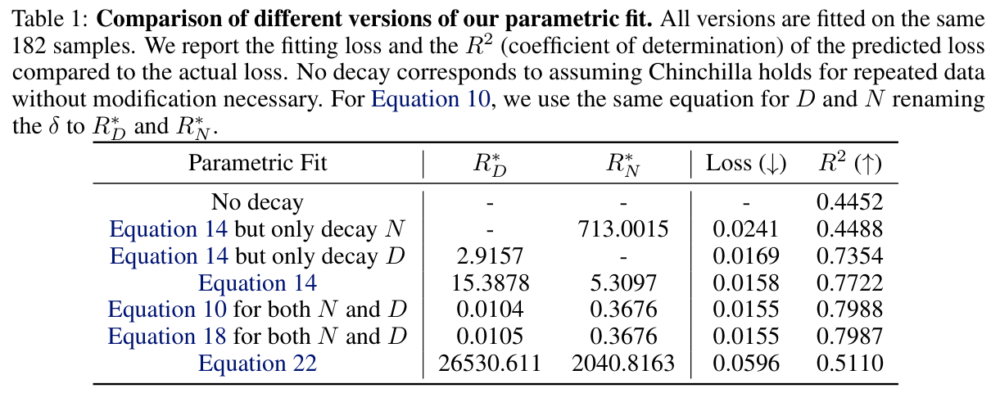
我们实验了公式的不同版本，表 1 展示了学得的值。不衰减，或者仅让公式 14 中的 \(D\) 或 \(N\) 衰减，都比公式 14 的 loss 和 \(R^2\) 更差。因此，同时衰减冗余参数和数据重复的价值很重要。我们还考虑了显式指数形式，其中 \(D'=\sum_{k=0}^{R_D}U\cdot e^{-R_D^*k}\)，于是由公式 9 可得：
这一显式衰减、公式 10 和公式 14 都得到了类似的结果，\(R^2\) 约为 80。公式 14 对数据的拟合略差于公式 10，可能是由于我们的近似。尽管如此，我们全文仍使用公式 14，因为它的项数更少，而且我们发现它更容易解释。
A.1 计算最优点的解析性质
在我们的情况中，考虑固定计算预算 \(C\) 和固定不重复 token 预算 \(U_D\) 的场景，后者隐含一组不重复参数 \(U_N\)。令 \(R_D\) 表示重复数据的次数（假设我们处于多轮情形，因此 \(R_D>0\)）。
写作 \(U_D=cU_N\)（对于 Chinchilla，\(c\approx20\)）。当 \(R_D\ll R_D^*\) 且 \(R_N\ll R_N^*\) 时，我们的扩展规律与 Chinchilla 一致，所以，对应 \(R_D=R_N=0\) 的点 \((U_N,U_D)\) 位于最优计算曲线上（续下页）。
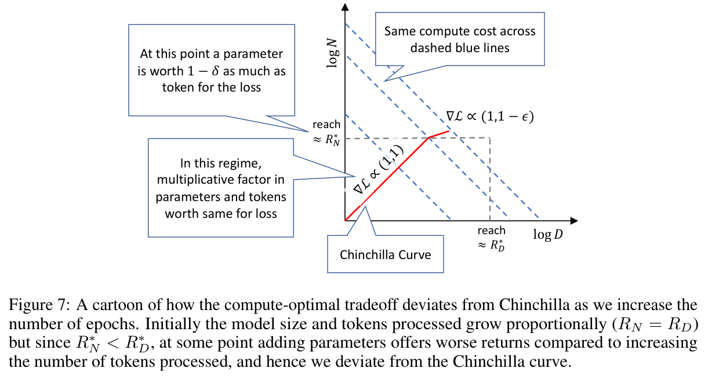
（续上页）将 \(R_D\) 增加 \(\epsilon\)，相当于 token 数增加 \(\epsilon U_D=\epsilon cU_N\)；将 \(R_N\) 增加 \(\epsilon\)，相当于参数量增加 \(\epsilon U_N\)。当 \(R_D,R_N\) 为较小正值时，我们的曲线与 Chinchilla 一致，因此，为保持比例关系，需要将 \(R_N,R_D\) 增加相同的量。所以，在某个值 \(r>0\) 以内，最优计算曲线对应 \(R_N=R_D=r\)。当 \(r\) 接近 \(R_N^*\) 或 \(R_D^*\) 之一时，我们的曲线开始与 Chinchilla 不同。这时，收益开始明显递减。
在我们的设置中，\(R_D^*>R_N^*\)，意味着我们首先达到 \(r\approx R_N^*\) 的位置。在这里，尽管计算成本相同，每个新增参数的价值却小于新增数据点的价值（具体为 \(e^{-r/R_N^*}\)）。因此，相比增加参数量，处理更多 token 会更有效，我们预计最优计算曲线将脱离比例关系。我们的观察确实如此。
B C4 扩展系数
虽然 Hoffmann 等人 [42] 表明，模型参数量与训练 token 数等比例扩展的结论适用于不同训练数据集，但具体比例在数据集和方法之间差别相当大。例如，给定 Gopher [89] 的计算预算 \(5.76\times10^{23}\) FLOPs，他们在 MassiveWeb 上拟合的参数化 loss 函数预测，最优参数分配是 400 亿。与此同时，如果训练数据集是 C4 [90]，其 IsoFLOP 方法预测最优参数量是 730 亿，几乎是前者的两倍。然而，对于我们使用的训练数据集 C4，他们没有提供用参数化 loss 函数计算 loss 所需的系数。根据在 C4 上的 IsoFLOP 训练运行，他们只给出以下信息：对于 C4，要达到最优，分配给数据 \(D\) 和参数 \(N\) 的计算量 \(C\) 应完全等比例扩展，即在 \(N_{\mathrm{opt}}\propto C^a\) 和 \(D_{\mathrm{opt}}\propto C^b\) 中，\(a=b=0.5\)。在参数化 loss 函数（公式 2）中，这对应于 \(\alpha=\beta\)。因此，我们结合这一信息、[42] 的方法和 C4 数据点，拟合参数化 loss 函数。我们将参数 \(\alpha\)、\(\beta\) 绑定为相等，并优化：
其中，LSE 是 log-sum-exp 算子，\(N_i,D_i,L_i\) 分别是第 \(i\) 次运行的模型大小、数据集大小和 loss，\(\delta=10^{-3}\)。我们在 54 个样本上拟合，初始化网格为：\(\alpha\in\{0.,0.5,\ldots,2.\}\)、\(\beta\in\{0.,0.5,\ldots,2.\}\)、\(e\in\{-1.,-.5,\ldots,1.\}\)、\(a\in\{0,5,\ldots,25\}\) 和 \(b\in\{0,5,\ldots,25\}\)。拟合得到 \(a=6.255414\)、\(b=7.3049974\)、\(e=0.6254804\)、\(\alpha=\beta=0.3526596\)。对 \(a,b,e\) 取指数得到 \(A,B,E\)，再把所有学得的系数代入公式 2，就能把 loss \(L\) 作为参数量和数据量的函数进行计算（续下页）。
为验证拟合的准确性，我们将预测与 [42] 中的 IsoFLOP C4 曲线进行比较。遵循 [42]，可以用下式计算我们拟合所对应的最优参数量 \(N_{\mathrm{opt}}\) 和 token 数 \(D_{\mathrm{opt}}\)：
给定 Gopher 的计算预算 \(C=5.76\times10^{23}\)，我们拟合的参数预测，最优分配是 \(N_{\mathrm{opt}}=700\) 亿参数和 \(D_{\mathrm{opt}}=1.37\) 万亿 token。这与 [42] 中 C4 的 IsoFLOP 曲线预测的 730 亿参数和 1.3 万亿 token 非常接近，因此我们认为拟合是合适的。在所有涉及 Chinchilla scaling laws 的计算中，我们都使用这些拟合参数，而非 MassiveWeb 参数。
C 更多等高线图
图 8 包含 4 亿和 15 亿不重复 token 的额外实证等 loss 线。结果表明，与图 3 一样，通过将参数和轮数增加到超出单轮计算最优值，可以达到显著更低的 loss。最低 loss 也出现在将更多追加计算量分配给重复数据，而非增加参数时。
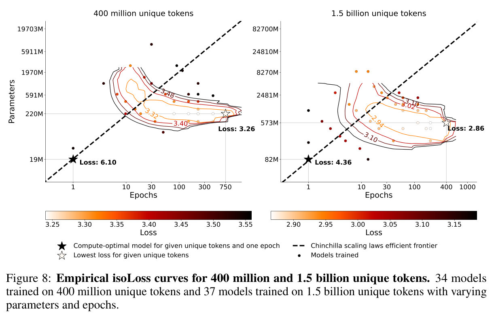
D 双降
此前工作报告了重复数据时的双降现象：随着模型训练轮数增加，loss 先上升，之后再次下降 [75, 40]。图 9 绘出了若干模型在 1 亿 token 上训练不同轮数的 loss 曲线。我们观察到双降现象：所有模型的 loss 都在 200 轮处上升，之后再次下降（续下页）。
（续上页）这为附录 A 中函数的拟合引入了额外噪声，因为我们的函数形式假设，loss 随轮数增加而单调下降。因此，我们从拟合中移除了大多数这类例子。
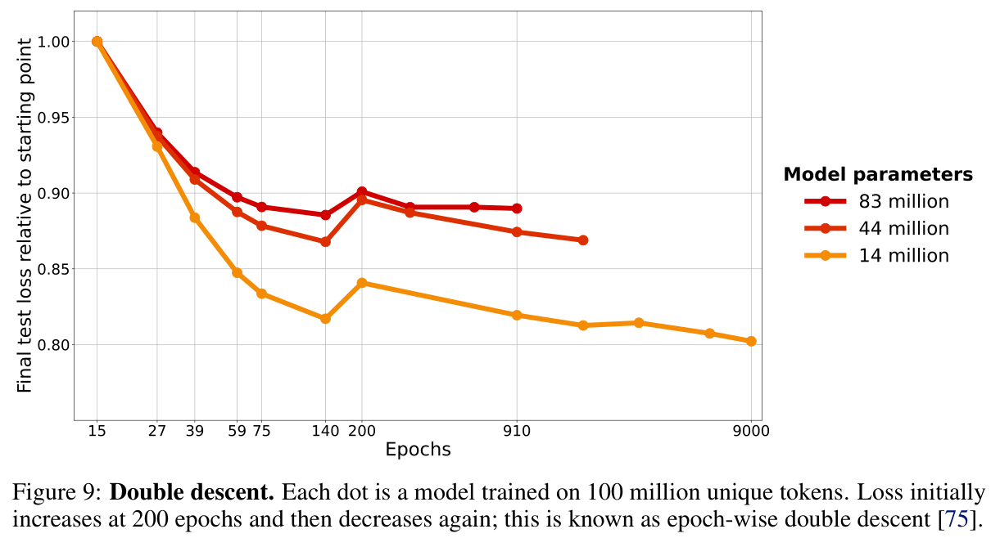
E 在高度去重的数据上重复训练
为研究图 3 是否取决于所选 1 亿 token 本身包含的重复量，我们在去重版 C4 上训练了几个模型（见附录 N）。图 10 绘出了去重 C4 和普通 C4 上训练的模型的性能。所有模型都在普通 C4 的同一个验证数据集上评估。无论是否去重，我们都发现最优轮数是 59 轮，整体趋势非常相似。结合我们在 OSCAR 上的结果（附录 I），这表明我们的工作可推广到不同数据集，包括其中固有重复量不同的数据集。
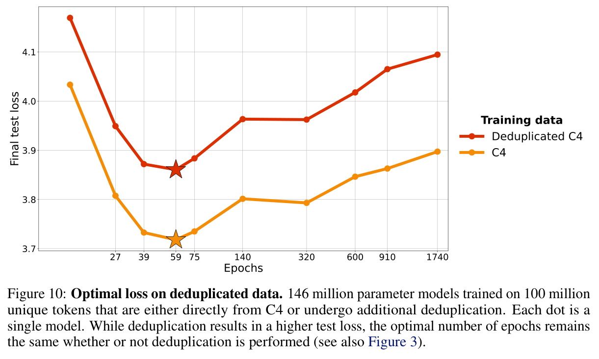
F 冗余参数会造成损害、进入平台期，还是带来帮助？
图 3、8 表明，冗余参数（或过多轮数）可能损害性能。我们假设这是因为超参数不够理想，使用更好的正则化可以避免。因此，我们预计，在最优正则化超参数下，冗余参数永远不会造成损害，性能只会进入平台期，因为极端情况下，正则化可以直接表现为删除冗余参数。选择最优超参数的一种方法是 µP [127]。在图 11 中，我们针对数据约束 \(D_C=1\) 亿 token 下训练的过大模型，比较了 µP、我们的默认超参数（附录 S）以及 scaling law 的预测。令人意外的是，µP 的测试 loss 甚至高于我们的默认超参数。尽管如此，我们发现，使用 µP 时，过多参数同样有害：仅在 1 亿 token 上训练后，超过 20 亿参数的模型，其验证 loss 显著高于 2 亿到 10 亿参数的模型。不过，µP 只覆盖学习率等超参数，没有覆盖 dropout 率等显式正则化超参数，而我们假设后者可以防止这种行为。因此，我们提出的扩展公式预测 loss 会进入平台期，如图中的直线所示。由于 1 亿 token 的计算最优参数量约为 700 万，图中全部模型都有大量冗余参数，数据受限 scaling laws 因此预测它们的 loss 全部相同（\(R_N^*\ll R_N\)）。与此同时，默认 Chinchilla scaling law [42] 预测，随着参数增加，loss 会继续下降，这与实证数据形成鲜明对照。
如果希望将冗余参数损害性能纳入 scaling law 方程，可以考虑：（a）修改附录 A 引入的指数衰减形式，使重复数据的价值不再衰减至 0，而是衰减至一个较大的负值；（b）衰减公式 7 中的指数 \(\alpha\)、\(\beta\)，而不是 \(D\)、\(N\)。将指数衰减至 0 的效果是，更多重复最终会损害性能，因为 \(\lim_{\alpha\to0}D^\alpha=1\)，对于 \(\beta\) 也一样。因此，开始时随着 \(D\)、\(N\) 增加，loss 下降；但最终，\(\alpha\)、\(\beta\) 的衰减会将 \(D\)、\(N\) 推回 1，导致 loss 上升。具体而言，方法（b）可以采用以下形式：
与附录 A 的方程一样，这个表达式在 \(R_D=0\) 或 \(R_N=0\) 的基本情形下，也会退化为 Chinchilla scaling laws。随着重复增多，指数变小，增加参数或轮数的收益会降低。最终，\(\alpha\) 或 \(\beta\) 的衰减通过将 \(N\) 或 \(D\) 推回 1，使 loss 再次上升。我们使用附录 A 所述的相同方法拟合该公式，但纳入冗余参数或过多轮数造成损害的样本（总计 296 个）。初始化网格为 \(R_N^*\in\{0.,2000.,\ldots,100000.\}\) 和 \(R_D^*\in\{0.,2000.,\ldots,100000.\}\)。结果为 \(R_D^*=26530.611\)、\(R_N^*=2040.8163\)。\(R_N^*\) 明显更低，意味着冗余参数比过多轮数更早造成损害，这与图 3 的实证数据一致。图 12 用这一 alpha-beta 衰减形式的预测重新展示图 3。预期参数最终会造成损害，从而形成圆形等高线。由于 \(R_D^*\) 很高，轮数开始有害的区域在图 12 的范围之外。虽然预测的最优分配（高效前沿）与图 3 类似，但预测的重复数据收益差异很大。alpha-beta 衰减形式错误地预测收益递减明显更慢，这体现为比图 3 更长的高效前沿，以及早期等高线间距更小。除了潜在有用的性质，我们对这一 alpha-beta 衰减形式并没有严格的数学论证，这可能是收益预测不准确的原因。
最终，我们选择了附录 A 的指数衰减形式，它不允许冗余参数或过多轮数造成损害，因为只需停止训练（轮数有害时）或删除冗余参数（模型参数有害时），就能轻易避免这种行为。此外，精确预测极限情况下 loss 上升多少，并没有太大用处，因为实际中预计进入平台期时，人们无论如何都会希望停止训练。
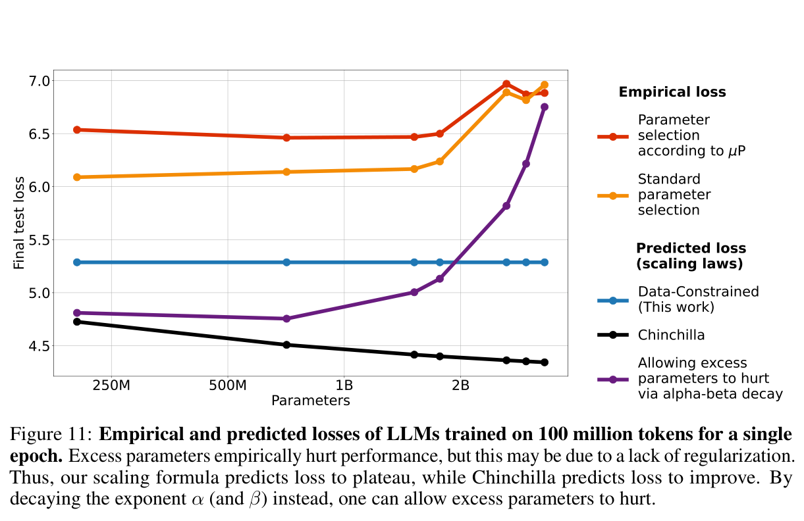
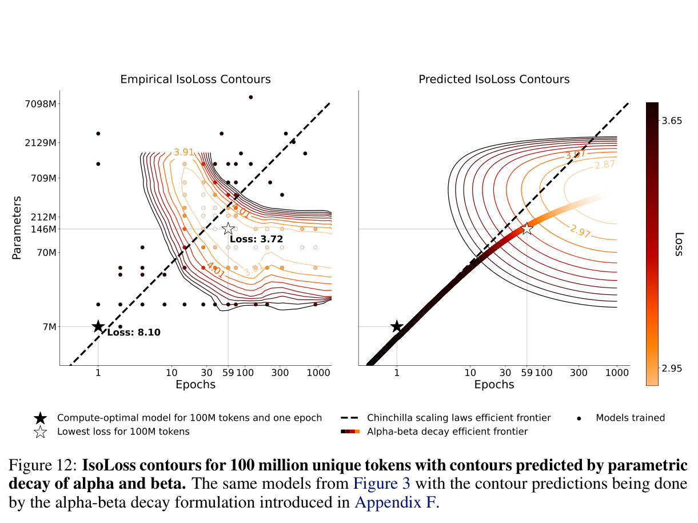
G 案例研究：Galactica
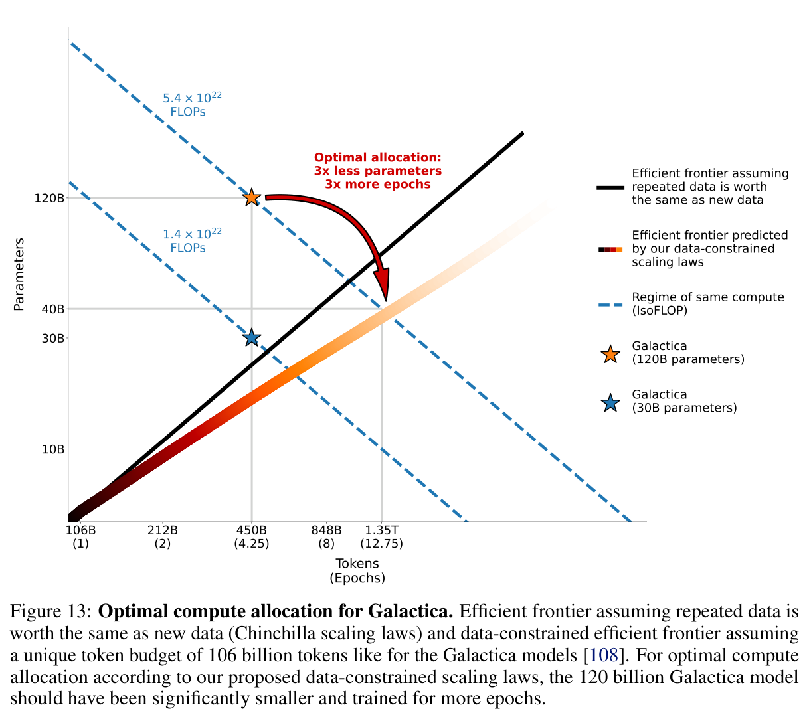
在本工作之前，Galactica 模型 [108] 是公开已知的唯一明确训练较多轮数的 LLM。它们在 1060 亿不重复 token 上训练了 4.25 轮。我们关于重复数据收益的发现与他们“多轮训练有益”的结论一致；不过，我们发现，更多轮数也可能有益，验证 loss 的小幅尖峰并不能成为停止训练的理由（附录 J）。与此同时，我们关于分配的发现与 Galactica 明显不同。图 13 用与图 1 相同的风格，将 Galactica 模型和我们预测的高效前沿一起展示。Galactica 的创建者决定在 4500 亿 token 上训练 1200 亿参数模型，即使按 Chinchilla 的标准（黑色高效前沿），这也明显过度分配了参数。这个决定可能源于如下直觉：重复数据价值较小，所以应该将更多计算量花在参数上。然而，我们的实证数据与此相反。从重复数据学习的参数，其价值甚至比重复数据更低，因此应该超额分配给轮数，而非参数。所以，我们的数据受限 scaling laws 预测，对于最大的 1200 亿参数 Galactica 模型，如果将明显更多 FLOPs 分配给轮数，而非参数，本可以训练出更好的模型。具体来说，根据数据受限 scaling laws，使用 1.35 万亿 token（12.75 轮）训练 400 亿参数模型才是最优的。注意，这些 scaling laws 是在 C4 上拟合的，而 Galactica 并未使用这一数据集预训练。Galactica 模型是在以科学内容为主的数据集上预训练的，其中除其他来源外还包含代码数据。[42] 的结果显示，在 C4 与 GitHub 代码上训练时，扩展系数存在差别，但总体分配趋势相同。因此，虽然我们预计训练更多轮的小模型优于 1200 亿参数模型，但最优分配不太可能恰好是 400 亿参数和 1.35 万亿 token。
H 训练 loss
Hoffmann 等人 [42] 使用训练 loss 作为核心指标。然而，重复数据、训练多轮时，训练 loss 不是一个好的指标，因为如图 14 所示，模型会过拟合有限的可用数据。因此，我们用留出测试集上的 loss 作为关键性能指标。
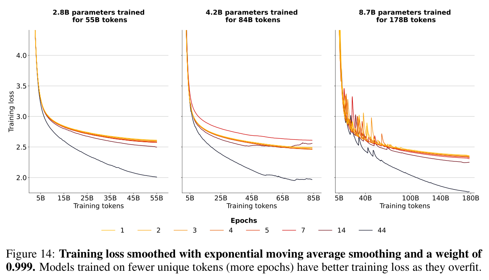
I OSCAR 语料库上的扩展曲线
为确保我们的发现不依赖特定数据集，我们在 OSCAR 语料库 [83] 上，使用与图 4 相同的配置训练模型。由于其去重较不严格，OSCAR 被认为比 C4 [90] 噪声更大。图 15、16 展示了这些模型的验证和训练 loss。我们发现，它们与在 C4 上训练的模型趋势一致：虽然重复更少的模型 loss 更好，但少量重复之间的差异并不显著。
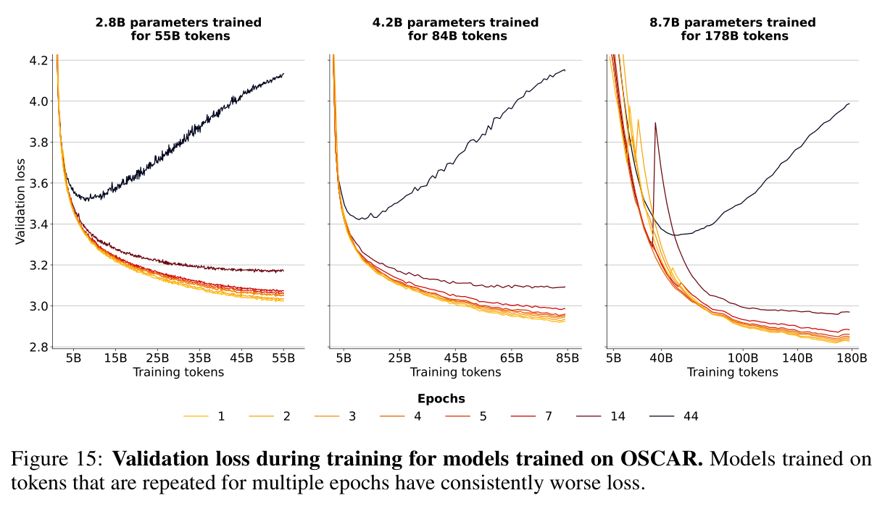
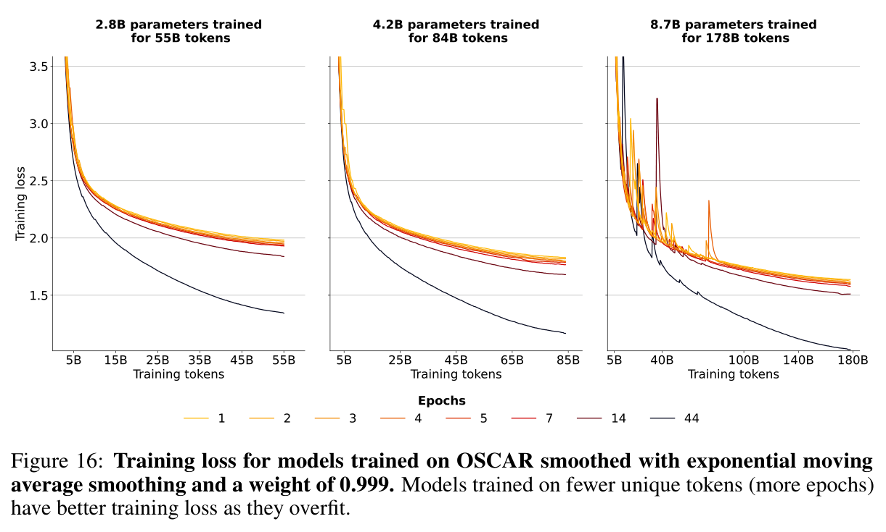
J 按训练轮数展示的验证 loss
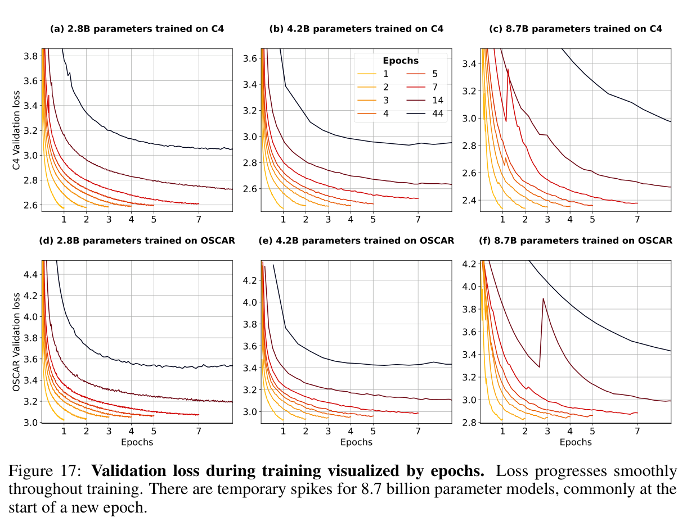
Taylor 等人 [108] 因为在第 5 轮开始时验证 loss 小幅上升，决定提前停止 Galactica 模型的预训练。图 17 将我们 isoFLOP 模型的验证 loss 曲线绘制为轮数的函数。我们确实发现，模型进入新一轮时，验证 loss 会略有上升。例如，在进入第 3、4 轮时，训练 7 轮的 87 亿参数 OSCAR 模型（续下页）。
（续上页）出现了 loss spike。然而，这些尖峰只是暂时的，之后 loss 会继续平稳下降。因此，我们推测，如果越过第 5 轮开始时的 loss spike 继续预训练，Galactica 模型本可以取得更好的性能。
K 评估细节
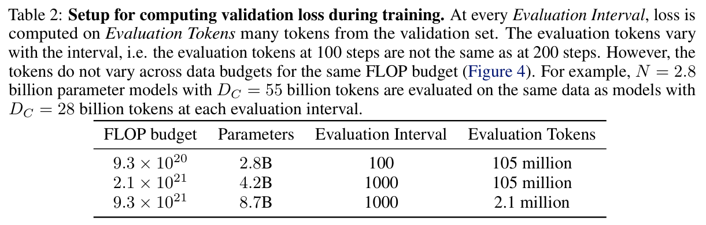
Loss 评估。 对于所有在 C4 上训练的模型，训练结束后的最终测试 loss，均在 C4 验证集中的同一批 2.1 亿 token 上计算。对于训练期间的留出评估，例如图 4，配置见表 2。87 亿参数模型使用的评估 token 数较少，这可能是图 4 中该规模模型出现 loss spike 的原因之一。因此，我们对 87 亿参数模型的验证 loss 曲线采用权重为 0.85 的指数移动平均平滑。对于 OSCAR 训练，配置相同，但验证划分是从 OSCAR 训练划分中留出的一部分，因为 OSCAR 没有官方验证划分。所有 C4 和 OSCAR 模型的训练 loss 曲线，都使用权重为 0.999 的指数移动平均平滑。
下游评估。 表 3 提供了全部下游评估数据集的统计。我们使用 BigScience 和 EleutherAI [32] 的 evaluation-harness 框架，在 19 个评估数据集上评估模型。对于每个数据集，最多评估 3000 个样本，分别使用 0、1、2、3、4、5 个少样本示例 [15]，得到六个分数后取平均。我们将得分归一化为每个任务的随机基线到 1 的范围，并以百分数报告。例如，如果随机猜测产生 50% 准确率，而最大可能准确率是 100%，那么原始准确率 55% 将被归一化为 10%；原始准确率 45% 则被归一化为 -10%，因为它比随机猜测还差。这样做是为了让所有任务具有相同权重。否则，平均性能会严重依赖随机基线为 0 的生成任务。提示来自 GPT-3 [15] 和 PromptSource [5]，详见附录 T。我们指出，我们的评估绝非全面，更大范围的基准测试会有所帮助 [102, 73]。不过，通过为多数接受基准评估的模型训练五个随机种子、始终对 0–5 个少样本示例取平均，并确保重复数据的最大重叠（第 4 节），我们显著降低了不确定性。
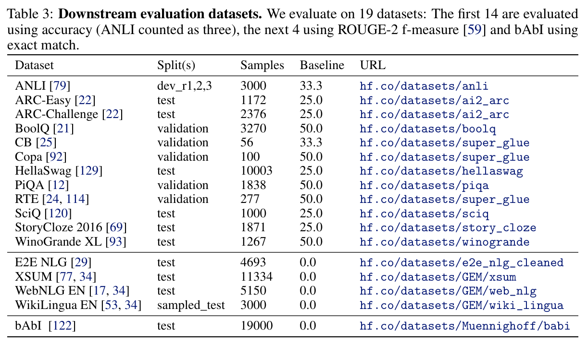
L 重复训练的下游结果
表 4–9 按照图 4 的配置，报告了所有在 C4 [90] 和 OSCAR [83] 上训练模型的下游结果。所有得分都来自训练结束时的最终 checkpoint。由于过滤更少，OSCAR 比 C4 噪声更大，因此 C4 上训练的模型通常表现更好。值得注意的是，在 C4 上训练的模型在 bAbI [122] 上完全失败，而 OSCAR 模型能取得优于随机的表现。这很可能是因为 OSCAR 中包含代码数据，因而像第 7 节的代码扩充模型一样，具备了状态跟踪能力。对于 C4，创建者严格移除了全部类似代码的数据 [90]。单轮模型与最多训练 4 轮的模型之间没有显著差异。即使训练更多轮（因而使用更少不重复数据）的模型，也有相近性能。
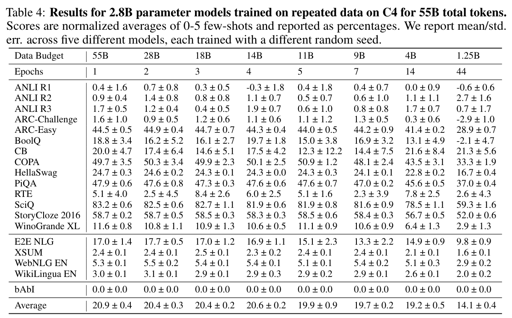
本页原文链接
- https://hf.co/datasets/GEM/web_nlg
- https://hf.co/datasets/GEM/wiki_lingua
- https://hf.co/datasets/GEM/xsum
- https://hf.co/datasets/Muennighoff/babi
- https://hf.co/datasets/ai2_arc
- https://hf.co/datasets/anli
- https://hf.co/datasets/boolq
- https://hf.co/datasets/e2e_nlg_cleaned
- https://hf.co/datasets/hellaswag
- https://hf.co/datasets/piqa
- https://hf.co/datasets/sciq
- https://hf.co/datasets/story_cloze
- https://hf.co/datasets/super_glue
- https://hf.co/datasets/winogrande
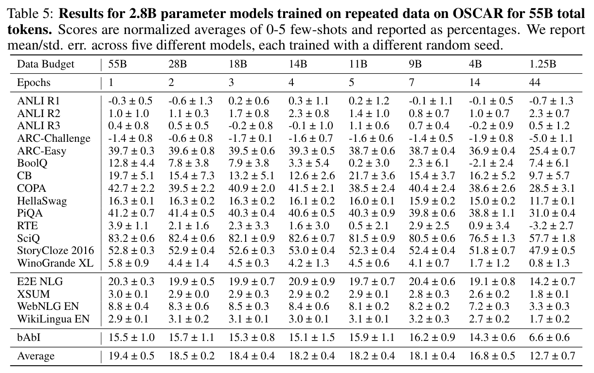
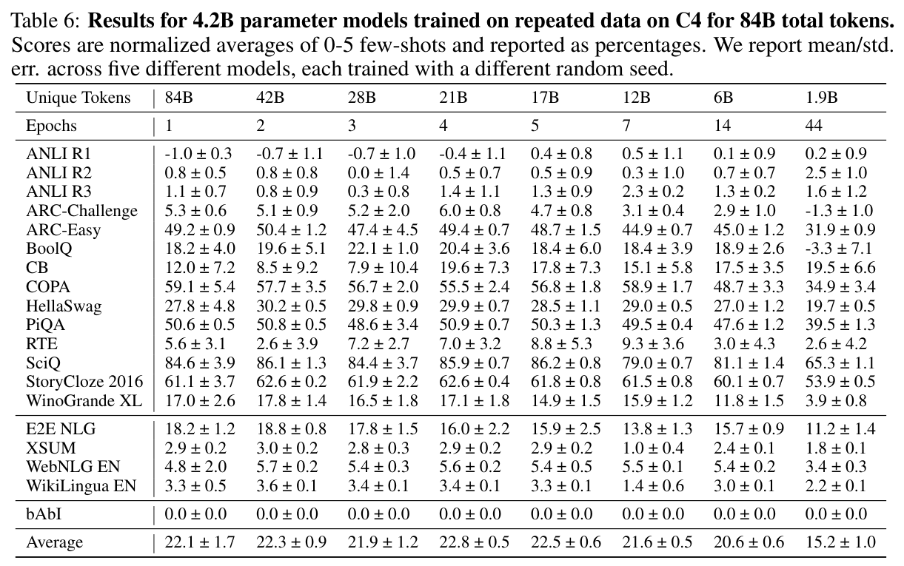
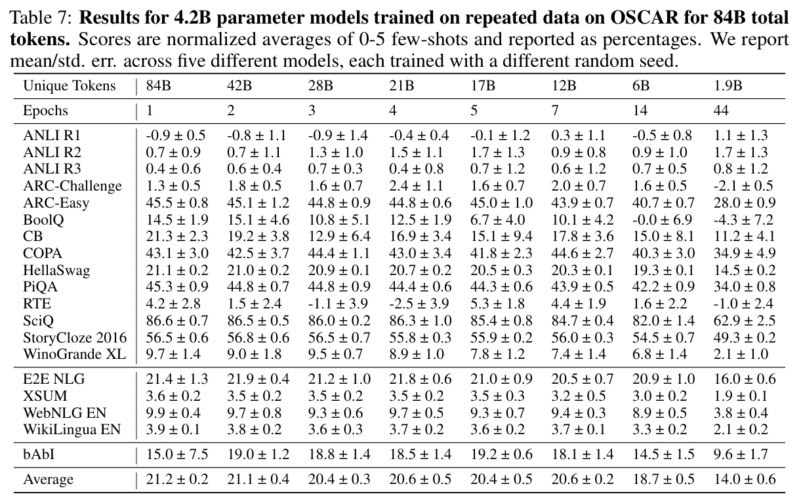
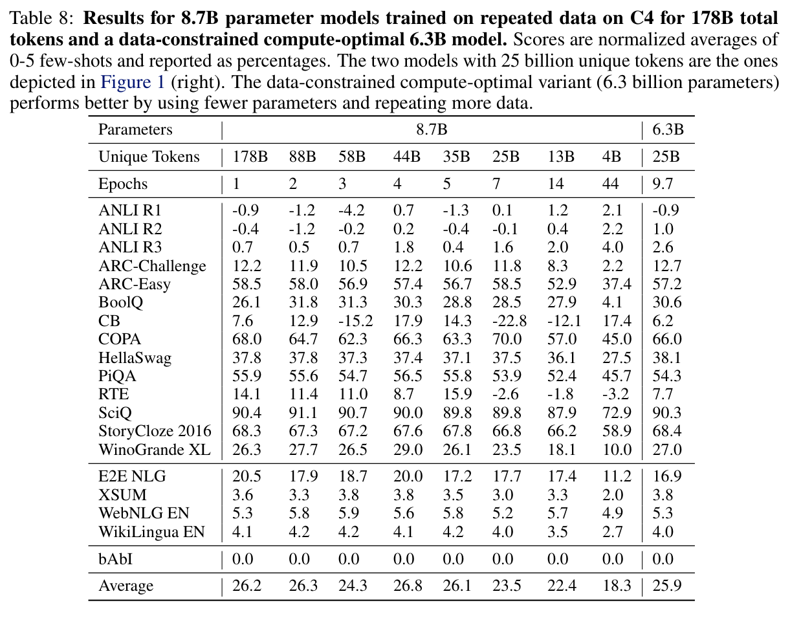
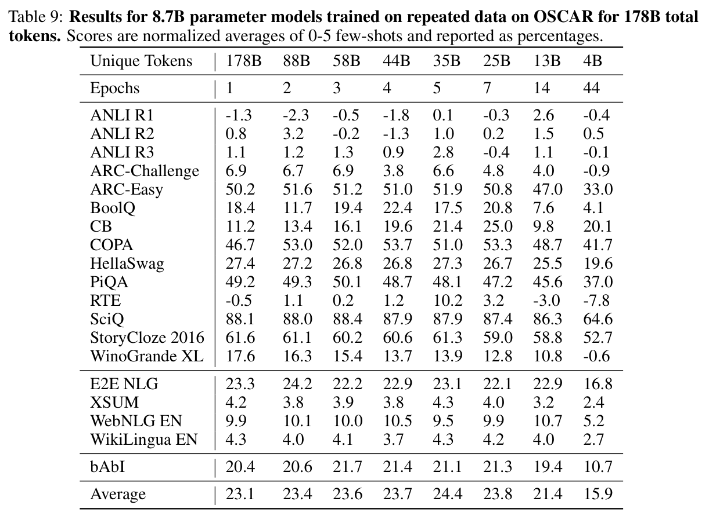
M 代码扩充的详细结果
表 10–11 以表格报告了 42 亿参数和 28 亿参数模型中，用代码替换部分 C4 或 OSCAR 的结果。我们发现，使用最高 50% 的 Python 数据训练，可以维持所有自然语言任务的性能，同时在 C4 上的状态跟踪任务 bAbI 上带来巨大性能提升。OSCAR 上的提升没有那么明显，这可能是因为 OSCAR 本身包含代码 [83]，而 C4 明确过滤掉了代码数据 [90]。
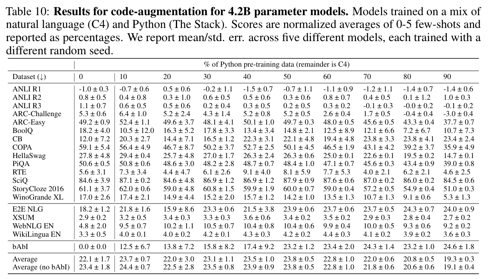
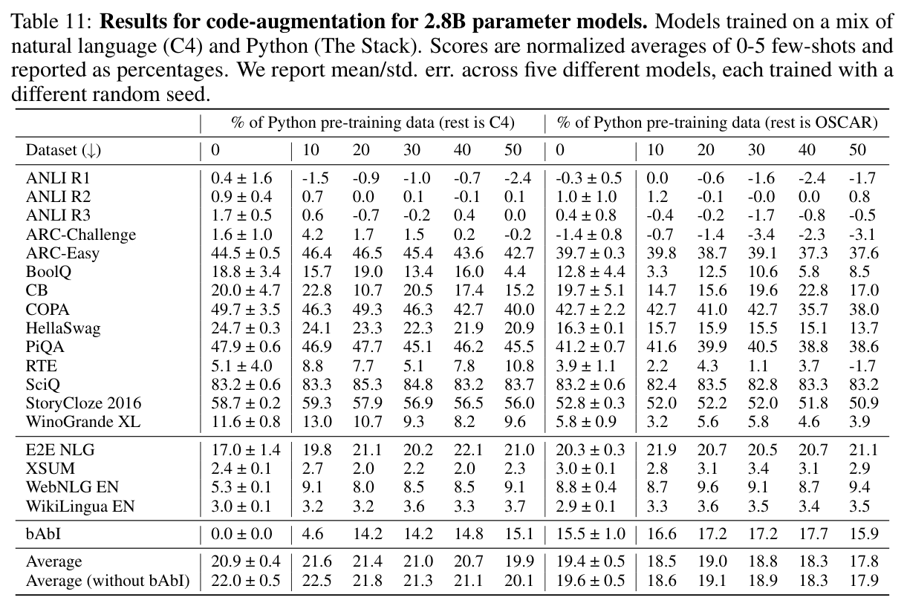
N 过滤过程
困惑度过滤。 我们沿用 [54] 的方法进行困惑度过滤，并复用其产物：一个 SentencePiece tokenizer [52]，以及一个在 Wikipedia 导言上训练、可从其代码库下载的 KenLM 5-gram 语言模型 [37]。4 我们计算该模型在全部 OSCAR 和 C4 样本上的困惑度，只选择满足特定百分位阈值的样本。例如，为选择前 25%，我们只选择困惑度低于第 25 百分位数的样本。图 18 直观展示了各数据集的困惑度分布，并标出相关的百分位阈值。
去重。 我们使用 Lee 等人 [55] 提出的基于后缀数组的方法去重。任何文档，只要包含一个与语料库中任意其他文档重叠、长度至少为 100 字符的片段，就将其移除。我们对整个 C4 数据集去重。对于 OSCAR，去重过程的内存需求使整个数据集去重不可行。因此，我们选择完整 OSCAR 的 25% 子集，为该子集构建后缀数组。我们实验了两种使用 25% OSCAR 后缀数组的方法。首先，对所选子集去重。这非常严格，保留下来的数据不足整个 OSCAR 的 5%。随后，我们使用这个 25% 后缀数组对整个 OSCAR 去重，即移除所有与所选 25% 子集包含至少 100 字符重叠片段的文档。这种方式更宽松，可以保留原始数据集的 31%。我们在表 12 中将后者称为 expanded，并将其用于表 14 中 42 亿参数模型的训练；较小的去重版 OSCAR 则用于 28 亿参数模型。
ROOTS 过滤器。 此外，我们还用 ROOTS 语料库 [54] 的过滤过程进行基准测试。它应用以下一组过滤器：
- 丢弃词数过少的文档。
- 丢弃字符 n-gram 和词 n-gram 重复过多的文档。
- 丢弃特殊字符过多的文档。
- 丢弃语法功能词过少的文档（例如 “of”“and”）。
- 丢弃被标记词过多的文档。
- 丢弃 fasttext 语言识别得分过低的文档。
- 困惑度过滤。
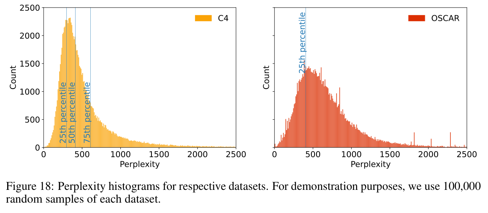
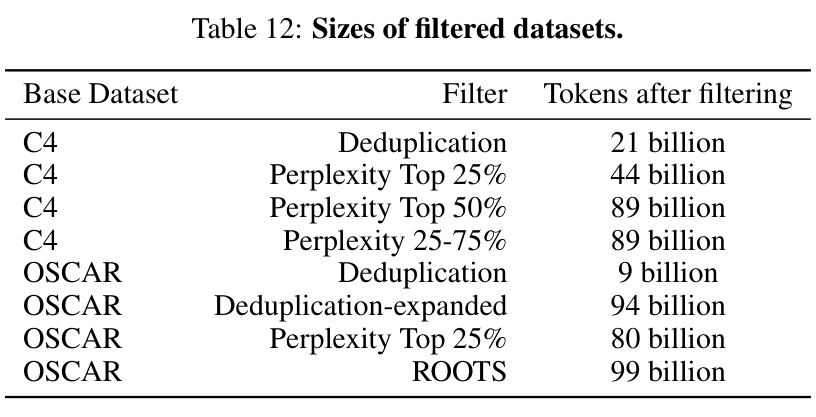
O 详细过滤结果
表 13 报告了 C4 和 OSCAR 上的详细困惑度过滤结果。对于 C4，困惑度过滤只在 42 亿参数规模上有效。与此同时，对于噪声比 C4 更大的 OSCAR，困惑度过滤似乎在 28 亿和 42 亿参数上都有效。表 14 包含去重结果和 ROOTS 过滤器的结果。对于 C4，去重没有改善下游性能，但对噪声明显更多的 OSCAR 有效。在我们的基准上，OSCAR 应用 ROOTS 过滤器并不优于未过滤的 OSCAR；不过，根据最终使用场景，它可能有其他好处，例如减少粗俗内容、模板化消息或重复。
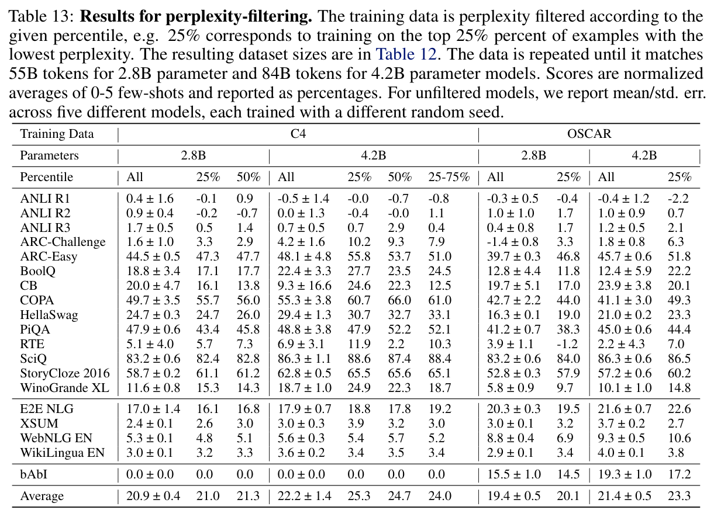
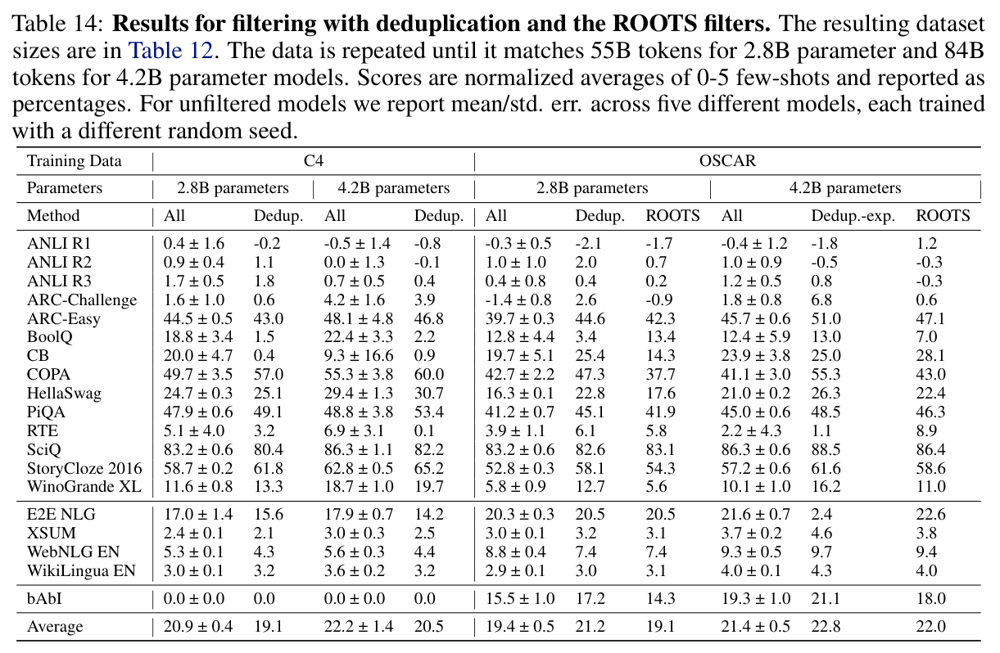
P 补充策略的 loss 曲线
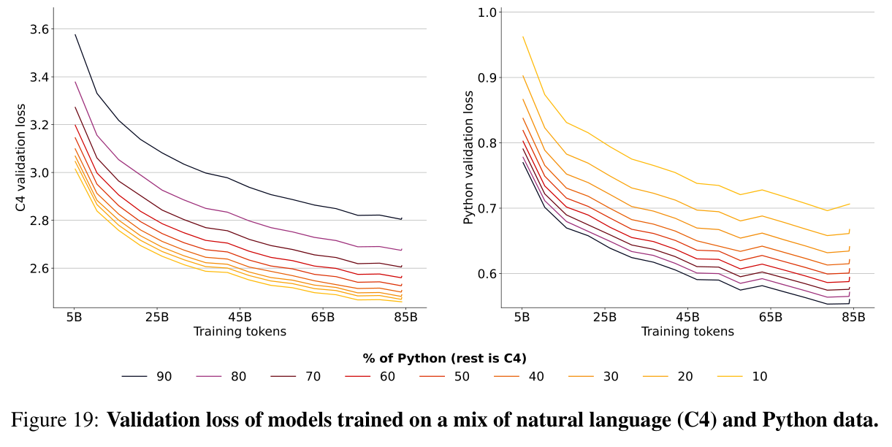
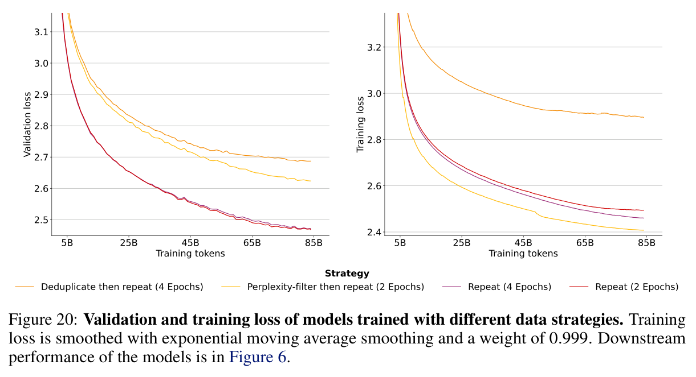
为了比较第 7 节的补充数据策略，我们使用附录 K 详述的自然语言任务下游性能，而非 loss。这是因为，对于在更多同分布数据上训练的模型，验证 loss 会给予不公平的优势。例如，用代码弥补缺失的自然语言数据时，在更多代码上训练的模型，在代码数据上的验证 loss 会更好，而在自然语言数据上的 loss 更差，如图 19 所示：用 90% Python 代码数据和 10% C4 预训练的模型，C4 验证 loss 最高，Python 验证 loss 却最低。
在去重或困惑度过滤数据上训练的模型，验证 loss 更高，因为留出验证数据没有经过相同过滤步骤。因此，它的分布更接近未过滤数据上训练的模型的训练数据，这使图 20（左）中两种过滤策略的验证 loss 更差。与此同时，图 20（右）的训练 loss 显示，在困惑度过滤数据上训练的模型 loss 最低。其训练数据过滤后只保留困惑度最低的前 25% 样本（附录 N），因而高 loss 样本被明确排除，导致训练 loss 较低。在去重数据上训练的模型，验证和训练 loss 都最高。这是因为经常重复的序列（续下页）。
（续上页）已从其训练数据中滤除。因此，在未过滤验证集中遇到这些常见序列时，它的 loss 会相对较高，因为其他模型很可能已经直接记住了这些序列。类似地，训练期间重复序列更少，会导致训练 loss 更高，因为未见过的序列更难预测。
Q 局限性与未来工作
重复部分数据。 本文关注将整个不重复数据集重复训练多轮。另一种做法是只重复数据集的一部分。例如，像 Hernandez 等人 [40] 那样，将数据集的 10% 训练 10 轮，其余部分只训练一轮。要预测这种情形下的 loss，可能需要给我们的 scaling laws 增加一个参数，描述被重复的比例，还可能需要一个参数，描述数据在训练的哪个时点被重复。与训练后期相比，在多数模型权重仍为随机初始化的训练早期重复数据，造成的损害可能更小。调整参数化拟合，以便对这些场景给出具体扩展预测，是一个令人期待的未来研究方向。
对超参数的敏感性。 增加轮数带来的收益，可能高度依赖学习率、dropout 或优化器选择等超参数。例如，增大学习率很可能使增加轮数的收益更早进入递减阶段。本文把大多数超参数固定为 LLM 训练中常用的值，将这类探索留待未来工作。
其他数据集。 最优数据策略取决于具体数据集，我们无法给出普遍适用的过滤建议。通过研究 C4 和 OSCAR，我们覆盖了两个最常用的英文文本数据集。在两者上的发现总体一致。我们强调了部分差异，例如，由于 OSCAR 比 C4 噪声更大，去重在 OSCAR 上更有效。此外，我们关注的是大规模预训练数据集。关于 LLM 的最优微调数据集和方法，已有大量研究 [94, 62, 128, 85, 117, 68, 116, 134, 115, 36, 125, 72, 63]。进一步研究如何解决 LLM 微调时的数据约束，可能是值得关注的未来工作。
其他模态或架构。 我们的工作关注文本数据集，使用 GPT transformer 架构 [88]。此前工作已实验过 GPT 或 transformer 架构的多种变体 [27, 104, 96]，以及非文本数据集的 scaling laws [1]。总体上，GPT 或 transformer 的架构变体已证明相当稳健，并能推广到其他领域 [43, 18, 70, 66, 71, 104, 26]。尽管如此，在未来工作中测试本文发现对不同数据模态或模型架构的适用性，仍可能有价值。
其他策略。 还有许多解决数据约束的策略，本文未涉及，值得探索。正如我们对 Python 所展示的，未来研究可以考虑，用一种自然语言（例如中文）进行扩充，在多大程度上能够改善另一种语言（例如英文）的性能，以及应该选择哪种语言 [61, 124]。同样，虽然我们考察了去重和困惑度过滤，其他策略也值得探索，例如基于流行程度的过滤器 [3, 133] 和毒性过滤器 [33, 38, 64, 87, 86]。
R 贡献
Niklas Muennighoff 主导实验、分析、写作和整个项目。他实现、训练并评估了所有模型。
Alexander M. Rush 参与了研究构思、结果分析与论文写作。
Boaz Barak 参与了形式分析、实验分析及论文写作。
Teven Le Scao 提供指导，主导数据选择和预处理，并参与研究构思与写作。
Aleksandra Piktus 创建了困惑度过滤和去重数据集，并参与写作。
Nouamane Tazi 为在 AMD 硬件上实现高性能训练作出贡献。
Sampo Pyysalo 为实现高性能训练以及早期重复训练实验作出贡献。
Thomas Wolf 为实验设计提供指导，并参与论文写作。
Colin Raffel 为实验设计提供指导，并参与论文写作。
S 超参数与设置
在所有训练运行中，我们用 1% 的 token 对学习率进行线性 warmup，升至最大学习率 2e-4，随后按照余弦计划衰减到 2e-5。小于 20 亿参数的模型使用 256 的 batch size，20 亿至 50 亿参数模型使用 512，大于 50 亿参数模型使用 1024。所有模型均采用 bfloat16 精度，使用 Adam 优化器 [48]，设置 eps = 1e-8、beta1 = 0.9。对于 beta2，我们发现，0.95 比 PyTorch 等实现的默认值 0.999 能获得略低的最终 loss，以及更少的 loss spike。不过，除 FLOP 预算为 \(C=9.3\times10^{20}\) 和 \(2.1\times10^{21}\) 的模型外，我们始终使用 beta2 = 0.999。我们使用 0.1 的 dropout 率、0.1 的权重衰减率，并在 1.0 处裁剪 gradient。这些超参数选择主要基于此前工作 [42, 110] 和测试运行的表现。由于我们的超参数选择并没有特别少见的设置，我们预计这一设置能推广到许多其他设置。表 15 列出了我们使用的模型架构，它们是 [42] 架构的扩展版本。我们遵循 [78] 计算模型参数，包括 embedding 参数：
其中，\(P\) 为最终参数量，\(l\) 为层数，\(h\) 为隐藏维度，\(V=50257\) 为词表大小，\(s=2048\) 为序列长度。我们发现，Chinchilla [42] 报告的参数量与我们的计算有明显差异，尤其是在更大规模下。部分差异来自他们更小的词表 \(V=32000\)。表 15 同时报告我们的参数量和 Chinchilla 的参数量，但本文所有地方都使用我们自己的参数估计。此外，我们修正了 [42] 中 35.30 亿和 40.84 亿参数模型的 head 数，使其满足 d_model = kv_size · n_heads。
为训练模型，我们 fork 了 Megatron-DeepSpeed [91, 99] 框架，并针对 ROCm 进行适配，使其能在 AMD GPU 上训练。训练代码已公开于 https://github.com/TurkuNLP/Megatron-DeepSpeed。模型在位于芬兰的 LUMI 超级计算机上，使用数据、张量和流水线并行训练，最多跨 64 个节点、使用 256 块 AMD Instinct MI250X GPU。截至 2023 年 6 月，LUMI 是欧洲最大的超级计算机，以约 310 PFLOPs 的性能位居全球第三。5 我们并行训练模型，在同一时点最多使用 2200 个节点（相当于约 8800 块 GPU、17600 个 GCD，或 LUMI 全部 GPU 的 86%）。总共消耗了约 300 万 GPU 小时。该集群完全由可再生能源（水电）供电，余热用于附近城市供暖，可使该城市碳排放最多降低 20%。由于芬兰气温较低，集群所需冷却相对较少，进一步降低了环境影响。截至 2023 年 6 月，它在最绿色超级计算机排名中位列第七。6
5 https://www.top500.org/lists/top500/2023/06/
6 https://www.top500.org/lists/green500/2023/06/
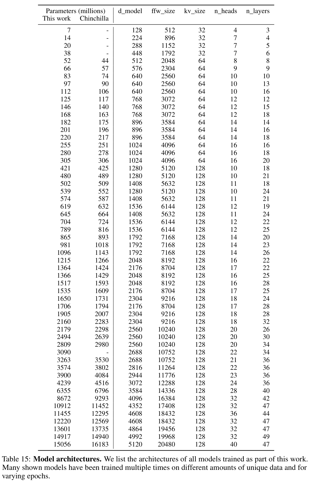
T 提示与样本
以下各图用每个评估数据集中的样本说明所用提示。提示来自 PromptSource [5] 或 GPT-3 [15]。本节所有数据均来自真实标注数据集，没有展示任何生成结果。
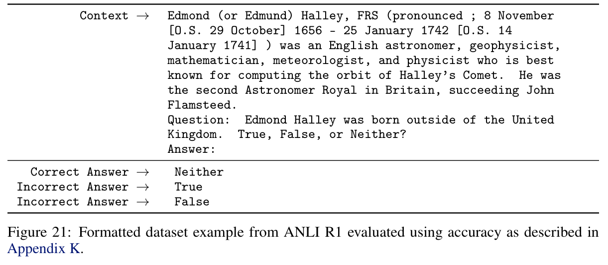
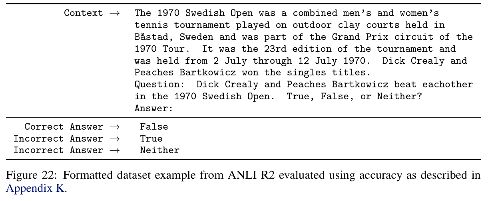
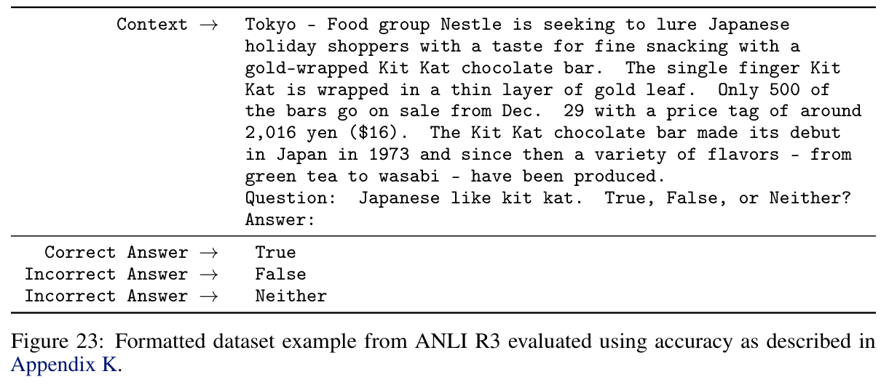
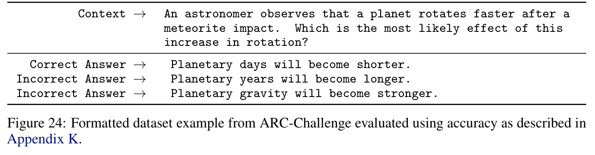
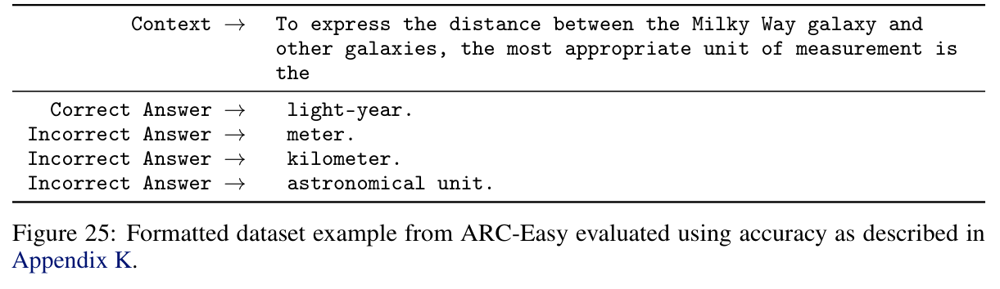
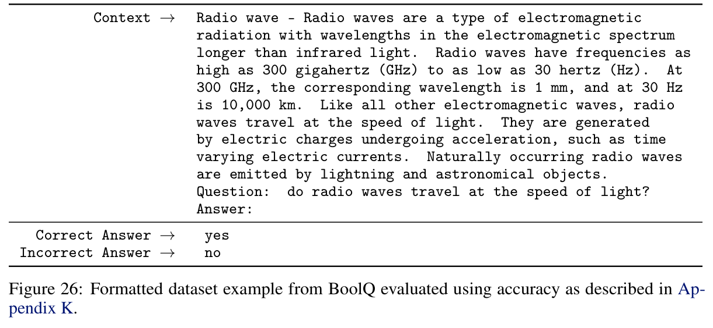
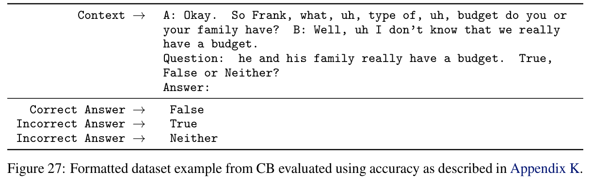
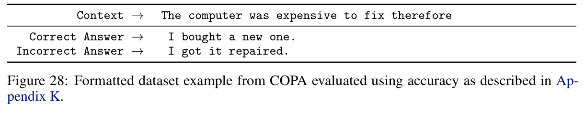
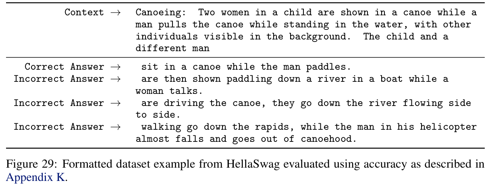
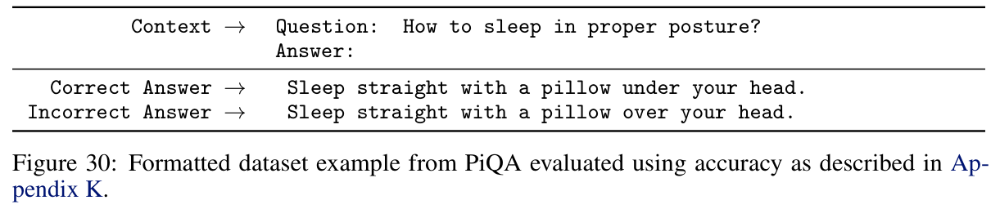
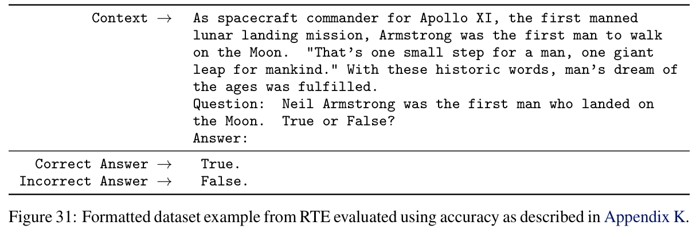
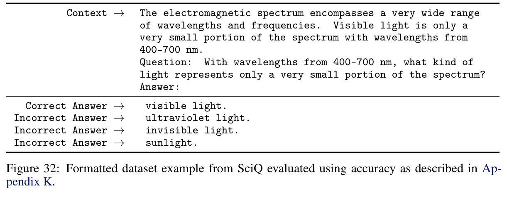
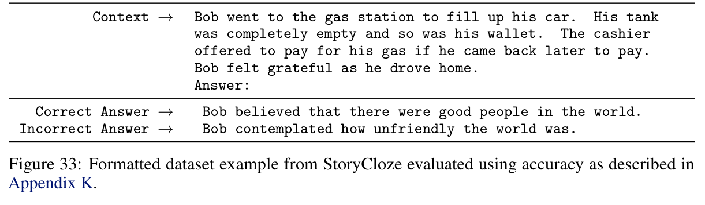
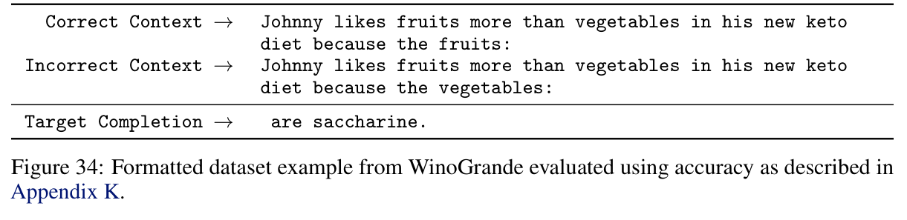
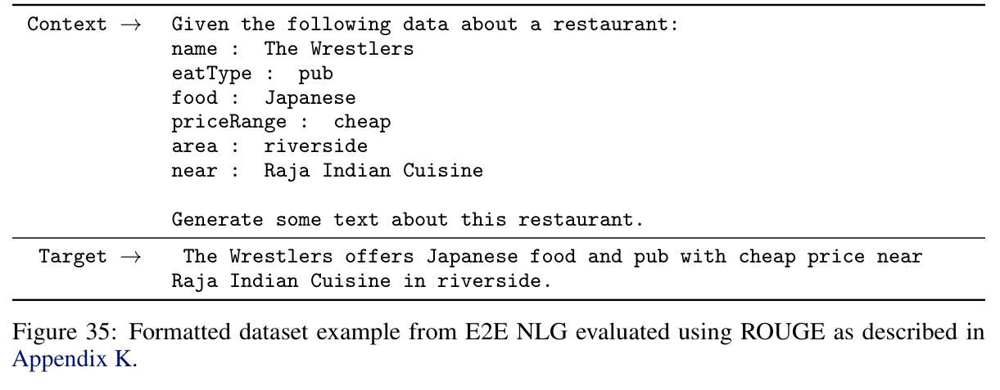
U 其他实验
UL2。 我们在因果模型上实验了 UL2 目标 [106, 107]，但没有发现它在我们的评估任务上优于常规因果语言建模。这可能是因为 UL2 更适合 Encoder-Decoder 模型，或是我们的 UL2 实现存在错误。
The Pile。 我们还在 The Pile [31] 上训练了若干模型，发现趋势与 OSCAR 和 C4 类似。我们公开提供这些模型。
V 产物发布
我们以 Apache 2.0 许可开源全部模型和代码。过滤后的数据集沿用其来源数据集的许可。全部材料可见：https://github.com/huggingface/datablations。
W 版本控制
V4 → V5：
- 小幅文字改进。
- 修正表 1 的 \(R^2\) 得分。
V3 → V4：
- 在表 1 中增加不同拟合的 loss 与 \(R^2\) 比较。
- 小幅文字改进。
V2 → V3：
- 在附录 P 中增加补充策略的 loss 曲线。
- 修正附录 I 中的 OSCAR 验证曲线图。
- 在附录 K 中明确训练和验证曲线图的平滑用法。
- 增加更多参考文献。
V1 → V2：
- 在附录 F 中增加衰减 alpha 和 beta 的实验，以允许过多轮数或参数造成损害。
- 在附录 G 中增加 Galactica 案例研究。
- 在附录 A 中增加根据 \(U_D\) 计算 \(U_N\) 的更多细节。
- 在附录 Q 中增加超参数敏感性的局限性。
- 在附录 K 中增加得分归一化方式的更多细节。
- 在附录 S 中说明 head 数的修改。
X 更广泛的影响
大语言模型存在潜在风险，包括输出冒犯性语言、传播社会偏见和泄露私人信息 [119, 8]。通过公开发布全部模型，并提供改善 LLM 扩展的新见解，我们可能助长这些危害的进一步扩散。不过，我们指出，已有更大且能力更强的模型可以自由获取 [14, 13, 95, 11]，也能被用于此类有害用途。因此，我们认为，开源发布我们的模型和研究，其好处显著超过坏处。